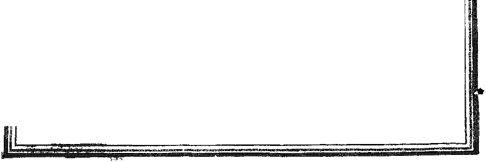

W
THE EARTH
; IN TRAVAIL
DOCTORS AND
LAWYERS ON
VACCINATION
THE SOLECTRIC
THEORY
NEV would blGTX’XIKG
VoLVm Bi-Weekly No. SW August 24,1927
«»
DYING
'ARROGANCE
against god
— $ 100 aOear
|||Bll|l|ind Breign Countries $ 15G
.....- v.:=: .
Social and Educational
On* In Twelve Robbed of Childhood 743
Appreciation of Little Folks .............. 746
Political—Domestic and Foreign
News Items ..................... 717
The White Man’s Burden in Samoa ........... 749
Agriculture and Husbandry
Mt scie Shows and the Importance of Cheap Nitrates . . . 748
Science and Invention
The Ewth tn Travaii..... 739
Causes of Earthquakes ................ 739
Earthquake Prediction ................ 741
Earthquake Precautions ................ 741
Earthquakes in the Ocean ............... 742
Miscellaneous Earthquake Items ............ 743
The Solectric Theory ................. 743
A Possible Cause of Earthquakes ............ 745
Foretelling Earthquakes ............... 745
Home and Health
What Doctors and Lawyers Think of Vaccination ...... 749
Travel and Miscellany
A Leaf irom a Sailob’s Diary .............. 750
Religion and Philosophy
President Calles’ Statement .............. 752
Akboqancb Against God ................ 753
Modestly Admits Hrs Greatness ............. 748
Why is the World Still Uncoki ebted and* Who is to Bia mb . . 759
The Clergy Need Conversion .............. 760
Bible Questions and Answers .............. 765
The First Earthquake on Record ............ 766
Little Studies for Little People ............. 767
Published every other Wednesday at 117 Adams Street, Brooklyn, N, Y., U. S. A., by ■ WOODWORTH, HUDGINGS & MARTIN
Copartners and Proprietors Address: 111 Adams Street, Brooklyn, X. Y.t U.S.A CLAYTON J. WOODWORTH . , . Editor ROBERT J. MARTIN . Business Manager WM. P. HUDGINGS . . Sec’y and Treas.
Five Cents a Copt—$1.00 A Year Maks Remittances to TffB GOLDS# AGH Xotlce to Subscribers: We do not, as a rule, send a card of acknowledgment for a renewal or for new subscription. A renewal blank (carrying notice of expiration) will be sent with the journal one month before the subscription expires. Change of address, when requested, may be expected to appear on address label within one month. Foreign Offices ; British ..... 34 Craven Terrace, Lancaster Gate^ London W. 2 Canadian ......... 38-40 Irwin Avenue, Toronto, Ontario Australasian ....... 495 Collins Street, Melbourne^ Australia South African ...... s Delia Street, Cape Town, South Africa Sintered as second-class matter at Brooklyn. N. Y„ under the Act of March 3. 1879
Volume VIII Brooklyn, N. Y., Wednesday, August 24, 1927 Numlw 207
The Earth in Travail
T E list of recorded earthquakes now includes about 7,000. The average loss of life in the fifty largest ones has been 25,000; and it is estimated that not less than 15,000,000 human beings have been slain by catastrophes of this nature.
The number slain depends upon, the density of population of the affected territory. Japan and Sicily have been the greatest sufferers in this respect. Tokio has been the scene of the two greatest earthquakes ever known, though 200,000 were slain in the Sicilian earthquake of 1908. Naples and Lisbon have each been the scene of two major earthquages. China, Persia, Peru, Bolivia and Asia Minor are great sufferers from this cause.
Some of the earthquakes which figure largely in the public mind were small catastrophes in point of loss of life. The San Francisco earthquake and fire demolished eight square miles of a great city; but the total loss of life was only 452, so that the loss may be said to be very small.
With the exception of a belt stretching across the world opposite to and including the Mediterranean Sea, practically all the earthquakes of the world occur around the shores of the Pacific Ocean, beginning at Java and going up the coast to Japan and Alaska and all the way down to Chile. The lands most free from earthquake disturbances are Africa, Australia, Russia, Siberia, Scandinavia and Canada, all relatively free from great mountain chains.
Some geologists think that present day earthquakes are mere child’s play in comparison with the stupendous one which they think tore North acd South America from Europe and Africa, and split Africa from Europe. If the earth ever gets another one like that it will be good bye for most of us. It will be noted that South America does look as though it had at one time been joined to Africa; and its western edge, all the way up to Alaska, makes America look as if. it had been pushed to the "west and folded upon itself. The great mountain chain is along the western edge.
About twenty earthquakes occur every day in some part of the world. Most of these are under water and their presence is known only to scientists, and only a small proportion of the land earthquakes is serious. The following is the Rossi-Forel scale for measuring earthquake intensities:
1. Felt only by experienced observer; very faint.
2. Felt by a few persons at rest; faint.
3. Direction or duration appreciable; weak.
4. Felt by persons walking. Doors, etc., moved.
5. Felt by nearly every one. Furniture moved.
6. Bells rung; pendulum clocks stopt. Alarm.
7. Fall of plaster; slight damage. Scare.
8. Fall of chimneys; walls cracked. Fright. i
9. Some houses partly or wholly wrecked. Terror.
10. Buildings ruined; ground cracked. Panic.
Cmses of Earthquakes
EISMOLOGY, the science of earthquakes, as a science is still in its infancy. At present theories on the subject are as plentiful as the flowers in May, and it is hard for a mere layman to tell which are the true and which are the false; so we give them all and then state our own ideas. We also publish in this issue a very interesting contribution to the subject, from the pen of T. A. H. Clark.
Among the causes which we have been able to find assigned by various writers are sixteen: Decomposition of parts of the earth’s crust, due to radioactivity; removal of oil, gas and miner-als; volcanoes; excessive internal steam pressure; collapse of caverns; faults; fall of cliffs; sinking of ocean beds; flowing rocks; earth waves; mountain shifts; interior strains; shrink-age of earth due to cooling; rainfall; sun spots; lunar attraction and attraction of other planets. No doubt all of these have their influence, and there may be others.
Scientists know that the crust of the earth is but a few miles thick, and below that crust the heat must necessarily be so great that all materials are in fluid or semi-fluid condition. Anything that would weaken the crust might in time cause an earthquake; and if there are sufficient radioactive materials in a given part of the crust it might be that in long lapses of time caverns might be formed by radioactive dispersal of materials, or the crust might become so honeycombed that it would not support the superincumbent load of earth. This does nc+ look very plausible to us, as there are so few materials that are measurably radioactive.
A.s to the removal of oil, gas and other minerals, there is no doubt whatever that the removal of these does create caverns in the earth; and as many of these things are removed under pressure it stands to reason that the loads which they once supported have to be shifted elsewhere, and strains are thereby set up which might cause earth-cracks. But this does not seem to be the real cause of earthquakes, because many of the oldest mining regions in the world are singularly free from such disturbances ; and it does not seem likely that man can get down far enough with his mining operations to seriously weaken a crust estimated to be at least ten miles thick.
The volcanic theory is not so unlikely, and it used to be the accepted explanation. Volcanoes are probably caused by waters seeping into superheated caverns, where they get hotter and hotter and the steam gets higher and higher until it blows the cover off. With the expulsion of great quantities of lava and steam the original caverns are enlarged, only to be refilled by fresh accessions of water, or by the settling of the earth surface into the void or, in other words, by an earthquake.
The steam pressure theory would not make a volcanic outlet necessary. The wafers get inside. A tremendous steam pressure is created, lava is forced right and left, north and south, east and west, and even downward. This lava pressure under a land area becomes too great for the surface to bear; and there is a erack, a fault.
The collapse of a cavern would be a natural enough explanation for an earthquake, as would the slippage of a fault or the fall of an ocean cliff; but what is wanted is something that will explain the existence of the caverns and faults. Anybody can see that once a split occurs in the earth's crust it is natural to expect that fresh sections of the rocks that have been dislocated should fall back into place from time to time. The slippage may be either vertical or horizontal or both, at the surface.
The Sinking of the Pacific
PROFILE of the Pacific Ocean depths between Panama and Japan reveals an almost steady slope downward from east to west, except in the middle, where the Hawaiian and Midway Islands are pushed above the surface. The deepest part of the Pacific, the Tuscarora Deep, is just off the coast of Japan. This fact seems to account for J span’s earthquake troubles. As the bed of the ocean has sunk, the Japanese Islands have been forced up; and the forcing process has been and is accompanied by terrible earth tremors.
'Scientists have noted with a great deal of interest that on May 23, 1925, the day on which Japan was visited by the most violent and dis-astrons earthquake since the severe one of 1923, the Bay of Biscay, on the opposite side of the world, was subjected to a tremendous submarine earthquake which forced the bottom up in some places over two miles nearer the surface of the water than it had previously been. This would make it look as if there really were something akin to waves of lava beneath the earth’s crust constantly trying to bend upward the weaker spots in the crust, or to push back parts which, have projected downward too far into the interior semi-fluid molten mass.
There can be no reasonable doubt that the shrinking of the earth due largely to cooling has been responsible for many earthquakes in the past, and is perhaps responsible for some of the later ones. Until the crust has settled down into its permanent location this must necessarily go on. Surveyors have discovered that the mountains of northern California are slowly moving southward, while those of southern California are moving a little more rapidly northward. This certainly looks like shrinkage of the earth in California, anyway.
As to the rain theory, this seems to rest on a sound basis. Former Prof. Omori, head of the Japanese Imperial Earthquake Investigation Committee, seems to have found, as a result of careful study of the rainfall in the northern part of Japan, that heavy rains there are always followed by a period of earthquakes. No doubt seepages from these storms find their way into volcanic cavities, and trouble follows.
But finally, and reasonably we think, the theory is advanced that the moon, which exercises such a terrific pull on the waters of the earth as to cause its tides, pulls on the land surface as well; and when it docs, and conditions are just rip lit beneath, the crust is lifted enough to allow lava to flow beneath and set up strains in the unfinished earth which may later lead to another spasm. The sunspot theory ret ts on a similar base. In other words, the sun, moon and stars are gradually pulling the earth into its final and perfect form. It is well proven trial the greater pull of gravity on the earth's surface at new and full moons renders eaith-quakes more frequent at these periods.
Earthquake Prediction
OAITNG events cast their shadows before.
This is as true of earthquakes as it is of cyclones; and as surely as men have become ,^pite proficient in opinions as to what the weather is likely to be in a given area at a given time, so surely is it hoped that earthquake prediction may some time emerge from the realm of desirability into that of fact.
It has often been noticed that birds and other animals manifest uneasiness and even alarm before an impending earthquake. It is believed that their keener senses enable them to detect premonitory tremors of earth and air which are insensible to man.
However, man can do things for himself that no bird can do. A Japanese professor has invented an apparatus by means of which the slightest earth tremors are converted into sounds that issue from a loudspeaker and an audible warning is given, in time to enable people to escape from their homes.
A San Bernardino attorney and scientist has planned the construction of a ribbon of cement a thousand feet long, the cracking of which he believes will provide him with advance information of a coming quake.
As before stated, the mountains of California are slowly changing with reference to each oth-— er. These changes, carefully studied, will suggest about when and where the movements indicated will set up strains that will crack the surface.
There are here and there some scientists who claim to expect a tremendous earthquake which, in effect, will be as disastrous to humanity as w’as the Flood. Our Lord and the prophets seem, to hint at something of the kind. Prof. Ben-dandi, noted Italian seismologist, has promised some great earth paroxysms before the end of! 1927. Cheer up! He may bo wrong.
Earthquake Precautions
FTER an earthquake has once started there is nothing that man can do to protect himself from it except jump for the nearest doorway and stand there while he counts off sixty seconds. In that time, it is estimated, the most serious shock will have spent its force.
It has been said that one of the best illustrations of what happens on the surface of the earth when an earthquake occurs is to place a marble on a kitchen table and then hit the table a sharp rap ■with a hammer. The marble will jump many times the height of the vibration set up in the table and do it in a hurry, too.
Whatever precautions man takes concerning earthquakes he must take in the way he builds. The most dangerous type of building is the adobe, then the brick and concrete block. It is said that 200-foot buildings are safer than 100-foot ones, because it seems that the vibrations in a building of 100-foot height are just about the right height to correspond with the earthquake’s period of swing and thus they receive the maximum jerk.
In an earthquake ordinary wire nails pull out ivith ease; but an ordinary American frame house can be made earthquake proof, according to Dr. Bailey Willis, of the University of California, provided the frame is -well put together with mortises and pins, and then, before the lath is put on, is securely bound with galvanized fence wire on both sides of the frame. The wire may be put on diagonally or horizontally, but in any event must be stretched tightly, and close enough together so that the plaster will adhere.
Dr. Willis thinks that in a much troubled zone the safest ivay to build a house would to be have a well-braced frame of heavy beams resting upon a broad ditch packed with cobble stones. This idea is embodied in every instrument for recording earthquakes and has been used successfully in Japan.
TAe Science of Seismology
THE science of seismology is less than fifty years old. The first accurate and complete record of an earthquake was obtained by Prof. James Ewing at the University of Tokio in 1880, by the aid of a new seismograph of his own invention. His studies were carried on afterwards and improvements made in his invention by Prof. Milne of the same university.
A seismograph is an instrument in which a 'delicately suspended pointer marks the oscillations due to any shaking of the earth's surface. In association with the telltale drawing which the shock makes of its own oscillations, the instrument photographs the face of a chronometer, showing the exact time when the shock occurred.
Wh«n a shock occurs a bell is rung, the face of the chronometer is illuminated for the fraction of a second, a sensitive plate is exposed for photographic purposes, and the instant the shock is over the instrument automatically adjusts itself in readiness for the next disturbance. The seismograph is seldom idle for more than a half hour. During 1926 and the early part of this year hundreds of new seismographs were installed, many of a sensitiveness hitherto unapproached.
Japan the Greatest Sufferer
APAN has an average of about four earthquake shocks per day. It was once a part of
Asia, with which it is still connected by the shallow Japan Sea, In fact, Japan was probably at one time under water, and was forced to the surface by the sinking of the land under the great gash in the earth known as the Tuscarora Deep, that “bottomless pit” in the Pacific Ocean just off the shores of Japan, where the waters are five mites deep.
The greatest toll of human life ever taken in an earthquake was in Tokio in 1703, when 190,000 persons lost their lives. This was followed, 220 years later, by the terrible disaster in the same city, September 1, 1923, when 142,807 persons were either killed or missing and 103,733 were wounded, Yokohama was destroyed at the same time.
An American engineer who chanced to be in a high building in Tokio at the time of the shock said that the structure swayed at least two feet. In some places the streets dropped from five to tea feet. A man taking a bath in a second story of a building was deposited in the street unharmed, and still in the bathtub.
Japan has five long “fault” lines, so-called. These lines may be readily traced upon the surface, and the earthquakes follow them. No doubt they will settle down sometime. Japan has made more real study of earthquakes than any other country. The general truth has been discovered that years following great earthquakes are likely to be characterized by a gradually diminishing frequency of small ones, Sfid that years during which there are few minor shocks are frequently the prelude to shocks of great magnitude.
Earthquakes in the Ocean
WE WOULD know more about earthquakes if we could see and examine the bottom of the ocean. The seismograph has shown us that most of the shocks occur there, and it is fortunate that they do. In one month as many as ten pronounced ocean earthquakes have been located. No doubt some ships have been swallowed up by earthquakes, several captains having reported narrow escapes.
Tremendous changes in ocean currents often follow great earthquake disturbances, and thew*' have a vital influence on climatic conditions and other things affecting human affairs. In 1922 Puget Sound waters were suddenly invaded by immense schools of fish closely resembling Norway sardines, hitherto unknown in Puget Sound. In 1897, when an earthquake visited India, myriads of fish were kilted- in the Ganges Stiver as though by the explosion of dynamite.
On the Western Coast
Lis along the western coast of the Americas earthquakes are frequent, despite the fact that among the editors of California there seems to be a sort of gentleman’s agreement to mention them but slightly if at all. Occasionally a shakeup like that of Santa Barbara, in Juho 1925, which wrecked every important building on the main street of the city, lets the eat out of the bag.
The San Francisco earthquake of 1906 generally referred to in California papers aa the San Francisco “fire”. It was a fire all right, but the fire was of earthquake origin. Huge structures were shaken to the ground; and whoa the water-mains burst and the fire started, there bwas no way of controlling the flames until they Ihad eaten up eight square miles of buildings.
? An interesting occurrence in connection with fehe Santa Barbara quake is that the shocks Opened up subterranean water-flows, with the Result that in a few years the district will have "Seen repaid for the earthquake many times over tti its increased productiveness.
In 1920, on the occasion of an earthquake in ^Xos Angeles, the disturbances were so serious in Inglewood Cemetery that many memorials and mausoleums were twisted and dismantled. This item is from the Monument and Cemetery Review.
During one of California’s earthquakes a certain deep well located in the San Joaquin valley temporarily became a geyser; and in the water ejected there was found a number of small fish without eyes, similar to fish which inhabit subterranean waters.
In Chile, in December, 1919, a mountain two miles long sank fifty yards; the River Turbio, a stream 300 feet wide, completely disappeared, leaving a dry canyon; and the Franeura River, formerly a swift-flowing stream between high banks, became a sluggish stream between low banks. '
Mfecelfeneon® Earthquake Items
TN THE year 1755 the city of Lisbon, Portu-4- gal, was destroyed in an earthquake which was distinctly felt all over western Europe and northern Africa. An area of five thousand square miles was lowered ten feet. Productive fams were converted into hopeless swamps and had to be abandoned.
In 1908 a terrible earthquake visited southern Italy and the adjoining island of Sicily. A region about seventy-five miles in diameter suddenly fell several feet, destroying almost everyM building in the entire area. Huge tidal waves'6' covered the debris with mud and washed thousands of fugitives into the sea. It is estimated that 200,000 persons lost their lives in this disaster, which is known as the Messina Earthquake.
One reason why no serious earthquakes ar® anticipated as liable to occur in the northeastern part of the United States is that not a single long cliff or visible rift in the rocks is found such as are common in zones of great earthquake frequency. In New York City the great skyscrapers go down to bedrock; nevertheless, after the St. Lawrence earthquake (which was felt as far west as Iowa) the Equitable and Woolworth Buildings were insured against earthquake damage.
The survivor of a Persian earthquake gives the following thrilling account of a disaster which left only two persons alive out of 4,000 that a moment before made up the population of five mountain villages. He says:
I had just found the cows lying in a deep hollow when suddenly the ground rose beneath me, and I fell. I lay terrified while the cow stampeded, bellowing. After some minute I hogan to ran back to the tents to my comrades, when I was again thrown down by a second shock. This shock was accompanied by a terrific noise, like a hundred thunderstorms. I thought it was the end of the world and that the mountains were falling up<m me, and did not dare to move any more. When it grew light I went to the encampment, but it was all buried. • One man alone lay on the edge of the rocks, groaning. ; As the light grew stronger I saw that where our village® ’ had been on the hillsides was now a sheer wall of rocks, ' as if the prince of devils had cut the mountain with hi# knife. Of my father’s house, of all our people, there was no trace; and in the whole valley no sound save the eiying of my wounded friend. ’
CHILD labor, according to official federal statistics, has been increasing steadily ever T* «in« tte failure in 1922 of the second federal amendment on child labor. Exact figures in 1922 were more than eight percent of all children between ten and fifteen yeans of age engaged in gainful occupations; or one in twelve of all the children of the United States. As the child , census was taken in midwinter, and children under ten not even counted, it is obvious thaj^ these figures are far lower than the number dp children actually working during what shonH ' be their school life.
DOUBTLESS many of the readers of The Golden Age No. 180 read with considerable interest and edification the article from the pen of M. I. D. Jones entitled: “Does the Sun Radiate Heat to the Earth ?” which appeared in these columns some months ago. It is anent that article that the following comments are offered respecting a theory which seems, to some extent at least, to run parallel thereto. That contributor, in the closing lines of his article, says:
It might be asked whether the sun’s supply of electricity will not be exhausted in the course of time. As electricity does not deteriorate through use, but is just as strong after it has turned a motor wheel as it was before, probably it goes the rounds of the universe from solar system to solar system and returns.
When our sun and its dependent planets become saturated, they probably give off their surplus electricity to other solar systems; and so it goes, from one to another, until it completes the immeasurable circuit.
This hypothesis receives confirmation from “The Solectric Theory of Tempests, Earthquakes and Volcanic Eruptions” advanced some years ago by Capt. Alfred J. Cooper, a British navigator, and is set forth in a book published by him in 1910. He defined the term “Solectric Power” as the power or energy exerted by the sun on every member of the solar system; which power, when analyzed or resolved into its component forces, includes light, heat, chemical action, gravity, electricity and vital force, according to circumstances and conditions.
Capt. Cooper states that the solectric force is conceived as a series of planes passing through the sun’s centre, and, though ever circulating, yet losing no power; that the v bieh goes in one direction comes back m UU« > v iitJ T, The sum total is ever the same, but local differences of potential continually take place. This harmonizes with the statement in Mr. Jones’ article already referred to, to the effect that “when an object becomes full to saturation the surplus electricity is attracted to some nearby body which is not so full of electricity”.
The horizontal planes are nearly parallel with the plane of the ecliptic. The vertical planes radiate in every direction, and both the horizontal and the vertical planes stretch out to the confines of the solar system. Neptune is as much under solar control as is Mercury, each planet being carried around the sun by the horizontal planes, at a suitable distance away, so that the density of the planet is balanced by the strength, of potential. The vertical planes are responsible for the diurnal rotations.
When two planets pass each other on the same solectric vertical plane, or the same solectric horizontal plane, it would appear that an intensified flow of solectric force takes place. This force is either at once passed on through the shortest paths of conduction, if a planet is metj with whi.ch is on the same solectric meridian, or the increased potential is stored up until other planets pass at certain definite angles to the other.
In such cases there occurs a discharge of solectric foice and a rebalancing of potential, so that soon a more equalized distribution of solec-trie energy once more reigns. When these redistributions take place every planet is affected, or violently disturbed, according to the number of planets which are acting at the particular time, such disturbances taking place in the form of earthquakes, volcanic eruptions, electrical storms, hurricanes, tidal waves, tornadoes, etc.
The earth may be likened to a huge electromagnet afloat in space, being acted upon by currents circulating around it and its insulation. ■>* Its insulation is the most effective known, the atmosphere. During storms and other natural phenomena this atmospheric insulation is penetrated by solectric force.
Solectric bodies have an intensified action when they are 57.5° and also 88° distant from one another. The influence of a solectric body on the earth is conveniently marked off by measuring a radius of 57.5° or 88° from a point on the earth’s surface vertically under the body. If a small are or curve is described, with the distance as the radius of a great circle, this will mark out the district affected.
These arcs or curves are passing over the earth’s surface continually, owing to the diurnal rotation of the earth; but they are of no effect unless they intersect, and then only at the positions in the vicinity of the intersections. A single planet and the sun strongly affect the earth at the intersection, and a single planet and the moon also have that power; but the severity and extent of any disturbance depend upon the number of planets acting on one area. The belt of influence of a planet may be taken as 2° in width, and for the sun or moon a width of 3° is ample allowance.
It will be seen, then, that the simultaneous convergence of a number of solectric bodies upon a given spot on the earth’s surface means an accumulation or overcharge of potential in the district affected, the existence of which condition can frequently be noted by a tense state of the atmosphere, such as is experienced immediately prior to an electrical storm.
2The solectric combinations bringing about the cli^dition described may be referred to as preliminary or charging combinations, while the condition itself may extend over periods varying from one or two days to several weeks, the accumulated potential being frequently supplemented from time to time by other and subsequent solectric combinations.
It is usually the moon which, coming along in its rapid and erratic course, supplies the connection that closes up, as it were, the solectric circuit, thus forming an explosive or detonating combination. When the moon approaches within one or two degrees, the storm (if the solectric redistribution thus manifests itself) has its beginnings, increasing in force in proportion as the circuit becomes more perfect, only to die -*4own as the moon moves off.
A Possible Cause of Earthquakes
IN THE case of mountainous districts the dissipation of accumulated potential is likely to be effected by sudden discharges through the peaks which, reaching high up through the atmospheric insulation, act as conductors, permitting a sudden and rapid discharge of potential which lifts the earth’s surface and causes earthquake shocks.
In flat-lying territory, where the process of redistribution is slower and spread over larger areas, tornadoes are likely to occur. The destructive track of tornadoes probably finds its counterpart in the course taken by the explosive solectric combination in the heavens; the track of waterspouts, also, being a similar counterpart. Each planet seems to produce its own characteristic effects. It seems that not without rqason did the Romans call the giant of our p&netary system Jupiter Pluvius, the “watery planet". Saturn and Uranus are supposed to cause earthquakes.
Additional to the 57.5s and 88° angles, other positions- have to be taken into account. Approaching terrestrial phenomena are not infrequently foreshadowed by the position of the sun or moon when at extreme declinations, or when they are crossing the equator. Others have their beginnings at the time of solar or lunar eclipses; not manifesting themselves, however, necessarily, in the line of obscuration.
Solectric bodies on the meridian of place, or in their nadir positions, are also operative. A number of solectric bodies converging contemporaneously upon a given area at 57.5° produce heat waves, while at the 88° angle cold waves result. This has been repeatedly proven. The hypothesis that earth-shocks are caused by the shifting or slipping of rocks affords no explanation of the tense atmospheric condition which usually precedes severe seismic phenomena, and would seem to be based upon one of the effects rather than upon the cause of the convulsions.
Foretelling Earthquakes
IT WILL be apparent from what has been said that terrestrial and atmospheric phenomena are susceptible of being forecast by the use of calculations based upon this theory. The Chilean Meteorological Office foretold the Valparaiso earthquake of 1906, as did also the originator of the theory himself. He also predicted the San Francisco earthquake of the same year, as well as the .Jamaica earthquake of 1907, in addition to many other major and minor phenomena of varied nature. The writer himself witnessed, in 1912, the fulfilment of a series of forecasts, which took place at the hours, and in one case at the precise minute, precalculated by Capt. Cooper.
The study of the solectric theory is one of absorbing interest, the fringe of which has barely been touched in this article. Not always are predictions realized precisely as made, as the writer had on one occasion reason to be thankful for. Various unknown factors which enter into the matter still remain unexplained. Abundant time and careful calculations are necessary, combined with considerable study of precedents in the judgment of charts, if precise forecasts are to result.
The author of the theory, in spite of his repeated successes in prognostication, has never received from the world of “scientists” the recognition so abundantly merited. He shows the ordered course of an all-pervading and wonderful power, and demonstrates that not a shower falls upon the face of our planet except with the permission of the great Creator,
THERE is, of course, much that can be said in favor of the "comfort, serenity and quietude of the childless home”. Indeed there is also at times a wonderful rest in the "comfort, serenity and quietude” of the cemetery and of the desert. We all need our vacations. But surely enjoyment of “comfort, serenity and quietude” is not the greatest thing in life.
Even Jesus left the courts of heavenly rest and peace and came to earth, suffered and died, that He might bring blessings to others. Our parents suffer and labor to bring us into the world; and in turn we should be glad to endure some discomfort until other little ones grow up.
Wonderful must have been the patience of our Les rd when crowds followed Him, including mothers and children. “And they that did eat were four thousand men. beside women and children.” (Matthew 15: 38) “And they brought young children to him, that he should touch them: and his disciples rebuked those that brought them. But when Jesus saw it, he was much displeased, and said unto them, Suffer little children to come unto me, and forbid them not; for of such is the kingdom of God.”—Mark 10:13,14.
These mothers walked a long way to hear the good news. These mothers and their children, whom the disciples rebuked, were no different than those of today. The Lord Jesus, who is "the same yesterday, today and for ever”, must certainly be displeased with the manner in which gome of His modern disciples rebuke mothers and regard children as nuisances. Verily, these shall also be rebuked unless they are converted from "foolish talking5’.
Half of the human race have gone down into the tomb as children, and they will return as such. Sorrow has pierced the hearts of millions of mothers, but the awakening will turn them into joy. The following are precious words by the jgoet:
"When we see a precious blossom, That we tended with such care, Rudely taken from our bosom,
How our aching hearts despair.
"Round its little grave we linger,
Till the setting sun is low, Reeling all our hopes have perished, 1 .With the Flower we cherished so.
******
"In the dawning of the morning, When the troublous night is o’er, ALL THESE BUDS in beauty blooming, Well rejoice to see once more."
A glorious prospect for little children, in the kingdom so soon to be established! There will be the “sucking child” and the “weaned child'’ and the “little child” (Isaiah 11:8,6); and there will be “boys and girls playing injure streets”. (Zechariah S: 5) When all have grown up and little ones are no more, the childlike innocency and purity will have fully entered the hearts of mankind; and on that account the satisfaction which now comes from the purity of children will not be missed. Jesus took a child to illustrate the proper spirit which His disciples and all should have.
“Blessed is every one that fcareth the Lord; that walketh in his ■ways. For thou shaft eat the labor of thine hands and happy shalt thou be, and it shall be well with thee. Thy wife shall be as the fruitful vine by the sides of thine house; thy children like olive plants around about thy table. Behold, that thus shall the man be blessed that feareth the Lord. The Lord shall bless thee out of Zion.”—Psalm 128:1-5.
The consecrated children of God have a great privilege now in impressing daily upon the minds of their little children the truth and standard of the coming kingdom. When Abraham, Isaac, Jacob and all the prophets return to earth and are made “princes [governors] in all the earth” (Psalm 45:16; Isaiah 32:1), then such children who love the Lord and who delight in doing His will shall undoubtedly be used in the service of the great, world-wide kingdom.
Pastor Russell once wrote that those who are guiding and teaching their children in the things of the Lord are already engaged in the work of the Golden Age. Therefore consecrated parents have a wonderful privilege of service, which comes ahead of any other service performed for mankind, outside of the service of telling the message of the kingdom. If our children are grown up and are not inclined to love the truth, we have the throne of grace; and su^h intercession on their behalf will, sooner or later, bring some fruitage.
Job had misgivings about his children. They were having a ‘good time’. He feared that they might have dishonored the Lord. He counted
Ids children, and, according to their number he Thus did Job aU the days" (Job li 4,5) In the offered sacrifices, saying, “It may be that my New Testament we are exhorted to follow Job’s sons have sinned and cursed God in their hearts, example.
Only Eight Days Elapsed
YYNLY eight days elapsed after the Roman
Catholic parade to the Yankee Stadium in New York City, in which 3,000 members of the Police Holy Name Society were included in the procession, when Roman Catholic Police broke up a parade of Protestants in the adjoining borough of Queens. The new proposition is that all religious parades of every sort be discontinued everywhere. It is a good idea. Let all those who wish to parade their religion do it in ordinary dress. Then nobody will know or care.
What the Masons Think
IN The New Age, a Masonic publication, printed in Washington, D. C., Reynold E. Blight, 33rd Degree Mason, says on the work of William Tyndale:
In all ages ecclesiastic! sm made common cause with privilege and the tyrant found in the prelate a ready defender. The pretension of the church and the pretension of the absolute monarch lent each other mutual support. It was to the advantage of both to keep the people in ignorance.
Nathan and Lina Straus Health Center
TIE Nathan and Lina Straus Health Center in Jerusalem has brought together for the first time in the history of Jerusalem a large concourse of Jews, Christians and Moslems, all in friendly relation with one another. Nathan Straus is one of the world’s truest benefactors, one of New York’s foremost citizens, and incidentally very friendly to the message of present truth as broadcast from time to time over WBBR and other I. B. S. A. stations.
Sensitiveness of the Knowles Tube
TIE Knowles tube, used by Elbert H. Gary in starting the Homestead Steel Mills, by the mere passing of his hand several times over a sphere, is so sensitive that for its operation it is said to require approximately one-fortieth of the energy expended by a fly in crawling upward one inch in one second.
New York?® Poor Ventilation
THE Commission on Revision of Tenement
House Laws has brought to light the fact that New York has the poorest ventilated homes of any large city in the world. In London and Paris the rule is that houses may be but two rooms deep, so that one can face a street and the other a court; but in New York the rooms are commonly three deep and often four.
Consolidation of Railroads
THE consolidation of the railroads of the
United States has so far progressed that of the 250,000 lines of main line mileage about twenty-two major systems take in eighty-five percent of the total net operating revenues, and these roads carry more than half the freight of the world and nearly half of the passengers. The consolidation of all the railroads of the country into a limited number of great systems is a settled matter of public policy, and probably the best policy to pursue.
Increase of Prison Population
WHILE it is true that the prison population of the United States has increased twenty-seven percent in the past four years, yet this is not so much the result of a crime wave as some have supposed but is chiefly due to the imposition of longer sentences than formerly. Under the Baumes Law several men are now serving life sentences for what hitherto were considered rather trivial offenses, one of them for borrowing an automobile when he was intoxicated.
Overalls in San Francisco
AN eleven-year-old boy was barred from school in San Francisco, because he came to school dressed in a suit of clean overalls, the best his parents could provide. His father is a World War veteran who was wounded in the effort to make the country safe for democracy. The mother stated that she believed dean overalls were better than dirty corduroys; and she was right.
Why Sikorsky’s Plane Crashed
TT IS all dear now why Sikorsky’s plane sud-* denly fell to earth just as it was starting, horribly burning to death two members of the crew. Only five minutes previously a Catholic priest had blessed the plane, and it could not carry the burden. When Lindbergh flew to Paris, he was a member of no church and Ids plane was not blessed. When he got back to New York the ecclesiastics fell all over one another so as to get into the picture and officially bless him. Poor fellow I It means the beginning of all his bad luck. It was the papal blessing on Cervera’s fleet that sent it to the bottom of the sea. It is an awful handicap to anybody.
THERE are ten elements that go to make up every plant, whether it be a tree, a stalk of corn or wheat, or a vegetable. One of these elements, carbon, is taken from the carbon dioxide which comes out of the air, and this is absorbed into the plant through the leaves by a breathing process very similar to that in animals. The other nine elements come out of the soil. Six of these nine elements are usually in every soil in ample quantities for an indefinite period. The other three, nitrogen, phosphorus, and potassium, are more quickly exhausted by the constant pumping of these elements out of the soil by the growing plants.
Of the three, nitrogen, which is vital to the growth of every plant, is most quickly exhausted. In spite of the fact that the air is about eighty percent pure nitrogen the plants cannot use it in that form. It must be taken from the soil through the roots in the form of soluble nitrates. Because it is soluble in water it is more or less rapidly washed away, and a new supply must be added from some source. This is done naturally, but v?wy slowly, by soil bacteria. Nature takes care of herself in the native woods by means of decaying vegetation, but under the stress of cultivation the nitrogen must be added artificially in order to preserve the soil fertility.
Nitrogen enters into every part of all plant organisms, and without it no plant can grow. If the supply in the soil is inadequate, there follows a 'weak and stunted growth. If the supply is exhausted, there can be no growth at all.
It is because nitrogen is so extremely vital, and is so easily washed out of the soil, and must be replaced artifically for cultivated areas, that this great plant at Muscle Shoals becomes a matter of supreme importance to the future of lAinerican agriculture. No solution of this question which does not guarantee a large annual production of cheap nitrates for the American farmer can possibly be satisfactory. And Congress will be faithless to its trust unless this paramount consideration is amply guaranteed and safeguarded.
Phosphorus, or soluble phosphates, is next in order in the rapidity with which it is exhausted. While it forms a very small part of any plant, it is so important that the cells of the plant cannot divide if phosphorus is lacking, and therefore growth cannot take place.
An abundance of phosphate hastens the production and maturing of fruit and seeds. The known supply of phosphates is very limited. Most of this is found in Tennessee, South Carolina, Georgia, Florida, and one or two Western States in sufficient quantities for commercial use. The very fact that the supply is limited should cause the American people to prohibit its exportation.
Potassium, which, is commercially known as potash, is the third element in the order of exhaustion. It must be taken from the soil in the form of soluble potassium compounds. It is directly concerned in the manufacture of sugars and starches in the plant, although it does not form a part of them.
Each plant requires every one of the ten food elements for healthy growth and maturity, the one that comes out of the air and the nine that come out of the soil. If one element is lacking, no plant can thrive. Where the processes of agriculture permit the growing plants to pump these elements out of the soil, the three elements which are more quickly exhausted must be supplied artifically. The other six plant-food elements are usually in the soil in ample quantities, but if one or more of the three easily exhaustible elements are lacking there is no soil fertility.
ASSUMING that the Germans were not fit to ■ govern Western Samoa (and that may very well have been true) the League of Nations gave to the British dominion of New Zealand a mandate to govern the territory, urging it to promote to the utmost the material and moral wellbeing and the social progress of the inhabitants.
We are just in receipt of a printed communication from S. H. Meredith of Samoa giving the Mtails of how this mandate has been carried out, and it is enough to make any decent man's blood boil with indignation.
It should be remembered that the Samoans are a proud, intelligent, dignified race of Polynesians, admittedly the highest type of natives over which Europeans have deigned to extend their “benevolent” svay. In Samoa, for hundreds of years, there has been a carefully guarded system of hereditary traditions and rights as jealously guarded as anywhere on earth.
Under the mandate the Samoans have less rights than they had under the Germans. They are now governed by a legislative council which is, in effect, the creature of the governor him-appointed by New Zealand. The natives have not one thing to say as to the levying or the spending of the revenue raised from them. It was for this very thing that America separated herself from Britain in 1776.
The Samoans, in thirty out of the thirty-three districts, have repudiated the council which the governor has appointed to do their legislating for them. To get back at them he has had an ordinance passed which gives him the right to exile any Samoan from his home town and to place him wherever the governor sees fit, to take from him his native title, or to imprison him.
Under this tyrannical rule hereditary chiefs, held in highest reverence by the Samoan, people, have been deprived of their hereditary titles, taken from their homes, banished to other districts and ordered to change their names so that they could not be identified.
Two assemblies of citizens of highest repute, the first of 250 persons and the second of 656, gathered in an orderly manner, Mr. Meredith and other intelligent Europeans among them, to frame resolutions of protest and to send a delegation to New Zealand to present suggestions for reform. The native chiefs who attended these meetings and who had been elected to servo as members of the delegation were at once arrested and notified that they would not be permitted to go to New Zealand to meet the Minister in New Zealand who is responsible for this condition of affairs. Since then they have been further disciplined, and the iron hand of tyranny and repression is still holding all of Western Samoa in virtual slavery.
Though the oau.se of Evil prosper, Yet ’ti« Truth alone is strong;
Though her portion be the scaffold, And upon the throne be Wrong, Yet that scaffold sways the future, And, behind the dim unknown, Standeth One within the shadow
Keeping watch above His own.
Db. J. J. G. Wilkinson, once a pro-vaecinist, was urged to investigate the whole subject, which with reluctance he did, and stated:
Not denying other forms of social wickedness, I, now, after careful study, regard vaccination as one of the greatest and deepest of all forms, abolishing the last of races, the new-born soundness of the human family.
Dr. Milton Ross, a scholarly student, physi-eian and scientist, made this startling declaration:
I should be false to the best interests of humanity did I not record my convictions, based on irrefutable facts that vaccination is an unmitigated curse and the most destructive medical delusion which has ever afflicted the human race.
John Henry Clarke, M. D., an eminent physician in Bolton St., London, England, says:
An epidemic of vaccination [or in other words, a smallpox scare] is a sure forerunner of an outbreak of appendicitis. I have met with a number of cases ia which swelling of the spleen and pain in the ileo-coeeal region have followed, sometimes immediately after and sometimes months after vaccination. In these cases ' remedies which are antidotal to vaccinosis are absriutdy necessary in order to relieve and cure the patients.
Dr. Adolph Vogt, professor of sanitary statistics and hygiene in the University of Berne, giving testimony before the British Royal Commission, stated:
After collecting the particulars of 400,000 eases of Hi.anpox, I ana obliged to confess my belief in vaccination is absolutely destroyed.
Dr. Charles Creighton, a recognized authority on epidemiology, has given irrefutable proofs of the fallacy of vaccination.
Prof. Edgar IL Crookshank, bacteriologist of King's College, in his “History and Pathology of Vaccination” denounces the practice as being “uncertain, unscientific and dangerous”.
Prof, Alfred Russell Wallace says:
The whole practice of vaccination is utterly opposed to the whole teaching of sanitary science.
The eminent Dr. S. Monckton Copeman says:
The most satisfactory material (for vaccination) was found to be vesicle pulp, obtained in post mortem room from cases of discrete smallpox that had died -luring a comparatively early stage of the eruption.
Dr. Carlo Ruata, Professor of Materia Medics at the University of Perugia, Italy, said:
Believe NOT in vaccination; it is a world-wide delusion, an unscientific practice, a fatal superstition whose consequences are measured by thousands of dead and wounded, by tears and sorrow without end.
Dr. Walter R. Hadwen, of London, England, the indefatigable and successful opponent of inoculation and vaccination, has stated that:
England had appropriated 4,000,000 pounds sterling for the cure of soldiers (returned invalided from ths war), and that he had treated many such, cases himself, and attributed their illness to the results of anti-typhoid inoculation I
“Resist the law,” wrote John Stuart “The state has no more right to enforce a suK gical operation than a religious ceremony.”
Dr. Zaehery T. Miller says:
We must defeat the effort of the man who would make sick an entire community of well people in the fear that a small portion of it may get sick.
We must denounce the idea that a healthy person is a menace to anybody.
We must see that our children’s education is not predicated on the point of the poisoned quill.
We must see to it that subcutaneous injection of an absolute poison does not take the place of sanitation and hygiene.
We must dedare against superstition practiced by the State.
We must not surrender the right of personal privilege in the selection of our food, our religion, our politics, or our medicine.
Blackstone’s opinion:
No laws are binding on the human subject which assault, the L?dy or violate the conscience. The compulsory veer inariuji L.s is guilty of both of these.
THE winds are light and progress is slow;
the northeast trade winds are finished; the passage home is long; the shortage of provisions has caused the weekly rations to be restricted; even biscuits, usually distributed on the basis of “full and plenty”, are now doled out. This particular shortage has been caused through one of the air-tight biscuit tanks being sealed by mistake; at least this is the report coming from “aft”. So instead of a fresh supply of crisp biscuits, “the cupboard is bare.”
In reply to the order “Short Rations” the crew has refused to do any other work than that of “working ship”. Shortly after eoimmmieat-jtag our decision, in true nautical style by assem-the break of the poop and our spokesman going into the sacred presence or the captain, even on the holy ground, “the w eather side of the poop,” fate soon changed our plans and stirred all hands into activity. A loud “crack” is heard, revealing a disaster; the fore upper top gallant yard has just broken in two.
The “rest” of this good Sabbath day has been spent in clearing the wreckage. Toward evening everything is again “in shipshape and Bristol fashion”. Then, with time once more on our hands, we can again give expression to our huiK gry feelings. Empty stomachs and empty cupboards seem to quicken the mind and make one feel even more hungry, and by now we feel like chewing the leather of our boots.
Twelve months ago an exceptionally fine spec-
imen of flying fish dropped on deck. A seaman carefully eteanod it, spread it, staffed it with tobacco to preserve it, and finished it off with a good coat of varnish. Here was a tempting morsel. Although having hung for these long months in the ship’s forecastle, tempered by the heat of a tropical sun and the icebergs of the arctics, and with "other things”, it is nevertheless eaten with relish; enjoyed more, perhaps, than ever a smoked haddock served in dainty WC style.
It is Christinas day, and we are near the Western Isles. Not even a biscuit, no flour, no peas, no beans, only a small quantity of "salt horse” [sailors’ name for salt beef] and one sack of grain sweepings, cleared out from the hold eighteen months ago and saved to feed a pig or chicken at soni° future date should some providence supply us v ith such luxuries.
We all sighed today when wo remembered some spoiled plum duff of twelve months ago that was carelessly thrown overboard. We more than sighed when we remembered that West India liner which either ignored or failed to recognize the signal “Short of Provisions, Starving” hoisted by us a few days ago.
The outward bounders of long ago generally had the reputation of using '‘Nelson’s eye” when passing a homeward bounder, winch meant delays in supplying victuals to those vessels commanded In “economical captains” and owned by poor, struggling ship-owners whose only chance of prosperity is the adoption of a close-fisted policy so far as supplies are concerned.
Anyway it is a sailor’s privilege to “growl”; in fact, a sailor that cannot growl is not much good; and growl we have done this good Christmas day. Neveitheless we have regaled ourselves on the “mess of pottage” made from the sweepings, ground in the coffee mill and mixed with a little, a very little, salt horse.
The day is indeed fine, the nip of the north wind is now being felt (and increasing the appetite), and we are sailing easily along, close hauled on the port-tack, sailing with wind on left-hand side looking from aft, forward. Christmas day is now past.
/ The following night. With freshening wind and cloudy sky comes the deep-voiced command "Clew up the Royals!” When carrying out this order we hear a yell from the man at the wheel, “Red light right under the lee!” Horrors! A large sailing vessel close hauled on the starboard lack, heading rigtit for our beam and close, too.
Orders follow in rapid succession: “Hard Down,” "Let Go Head Sheets,” “All Hands on Deck.” Shouts can also- lie heard from the oncoming vessel. This scene can be imagined better than described. Men, dressed only in shirts and underpants, quickly left their beds and obeyed the orders, some cutting life-saving appliances adrift, others throwing off oilskins, preparing to raak^ a fight for life if the vessel sinks. An old colored cook has a few of his treasures burdl°d up m a black silk handkerchief and siring over his arm.
The tvzo ships are now rising and falling in the ocean sw<d]; and at each roll the spars seem to interlock; but fortunately they never touch. Through smart seamanship, together witli skilful handling: and a ready response to orders, both ships hav° brer maneuvered into positions of less dangej ; and th? d:s“ance between the ships’ heads has row widened.
But before tread way ear be gained a large wave lifts the comirer of on? above tire other— a crash! a grinding? Then quietness. The ships have parted. A rapid survey proves no underwater damage, but the storing gear has been rendered useless.
Tonight bo*h vessels, ii accordance with the traditions of the sea, “hove to” for the night, “standing by” tn render aid to each other should it be required.
The morning breaks. All hands are engaged clearing wreckage and getting a jury steering gear rigged up. A boat has been lowered and communication made with the? oilier vessel. This is surely a God-send. We are now able to beg or buy a cask of spit peas, a few bags of biscuits, and other items of less importance. At any rate the quantity being supplied is enough to allow a ration of half a plate of pea soup three times a day for a while; and a little biscuit added to this makes a meal.
The weather is now full winter, in North Atlantic; and everything seems to be against our arrival at a port of call—Queenstown or Falmouth.
Through the misdirections signaled from an outward-bound steamer we have made the Lizards to windward; and during the night we had difficulty in clearing the Scilly Isles on account of the heavy weather.
Today the wind favorable for Queenstown, and we square away. Soon we shall make the Irish land.
The wind has again changed, making it impossible to enter Queenstown; so we are making a fair wind of the change and running toward the Scilly Isles.
Another change, another fair wind, and away once more for “Bog Oak Mary” [the name of an old woman who was formerly engaged in the particular trade of selling bog oak ornaments, shawls, etc., to sailors along the docks at Queenstown J.
Surely v. e are now near our destination, dose under the land at Ballycottin, showing signals for the pilot.
Black clouds rising rapidly over the land. With a roar the wind comes and blows away all our hopes of Old Ireland. Wc now have the feeling of slack belts, empty lockers and a vision of the Flying Dutchman who is for ever condemned to sail the seas around the Capes.
Dawn. The wind is again behind us. Now we are making a quick run to Falmouth.
Port at last. We are now anchoring in this beautiful harbor at midnight, Saturday night.
Another vessel arriving at the same time is causing the silence of the night to be broken, through the exchange of cheers and the rattling of the cables. Even though weather-beaten and hungry, a song is being raised on all sides.
Now a dead calm settles over the harbor. "What a strange feeling after weary days of gale upon gale. Tired out, we now have the relished opportunity of a real night's rest. [“He bringeth them unto their desired haven.”]
The morning breaks. Not a breath of wind; the landscape is clothed with its winter mantle; the air is crisp with frost; the silence is broken only by the bark of a dog, a human voice, then the clanging of the bells. What a morning! The harbor shows early signs of activity. Many boats are making their way alongside the new arrivals—some on business, others looking for some.
Here comes the old Bumboat, a feature now rapidly falling out of sea life. But how we revel in it! Even if its prices are 100% more than the shops, what care we? We have had only half a plate of pea soup three times a day for a fortnight, and on one occasion a wave caught the. “peggy” [ration carrier, etc., for the day] aiuMP without ceremony carefully put the pea soup “kid” [ration tin] and all into the Atlantic. That was an eventful day; can we forget it? Yes; we can now. What care we for the ship’s now replenished rations of split peas? We can now regale ourselves with other delicacies from the Bumboat!
Four-pound loaf of soft tack [bread], one pound of real butter, a two-pound pot of jam, a large tin of salmon, a couple of tins of sardines, a bit of cheese, a bun loaf, milk, cocoa and milk, coffee and milk, sugar. What a dainty dish to set before a month-old fast!
And letters from home! Some have sad news; and even in the midst of such a banquet our hearts, though accustomed to the rough life of the sea, cannot but be touched in sympathy for our mates whose joys have been cut short through the sad news of loved ones—gone.
“They that go down to the sea in ships, that do business in great waters;
“These see the works of the Lord, and his wonders in the deep. . . .
‘Tie maketh the storm a calm, so that the waves thereof are still.
“Then are they glad because they be quiet; so he bringeth them into their desired haven.
“Oh, that men would praise the Lord for his goodness, and for his wonderful works to the children of men I”—• Psalm 107: 23, 24, 29-31.
IN HIS official statement regarding the murder of a trainload of poor Mexicans by the Priests Vega, Pedroza and Angulo, and their comrades, in the State of Jalisco, Mexico, on Tuesday night, April 19th, President Calles made the following pointed summary:
As the only comment on this painful happening, we desire to call the attention of the people of this country who have common sense, and especially of the poor classes, to which the passengers who were barbarously burned alive by this church crowd belonged, to the low moral level of those who desire to constitute themselves V' into spiritual directors of our country and seize power. This is not to be considered strange, because it is merely an exact repetition of proceedings which the Catholic church has always used from the time of the Inquisition to the present time.
[Radioeast from Station WBBR on a wave length of 256.3 meters by Judge Rutherford.]
IT IS well known that there is much evil in the world. There are many who are arrogant and proud, presumptuous and harsh. Such are oppressive and burdensome to the people. The Scriptures declare that God is love and the very expression of goodness. That is entirely true. Many good people have asked, therefore, If God ig love and possesses unlimited power why does permit so much evil, pride, arrogance and wickedness in the earth?
The Scriptural answer is that God made man in His image and likeness, and endowed man with the power to do or not to do certain things, lie gave him the power to exercise his own will seUishly or* unselfishly. He permitted man to take an evil course or a good course. The first man look an evil course. Most of his offspring have been evil; and many of them have been proud, haughty, austere and harsh. Ever and anon the Lord has rebuked arrogance by the expression of His own poAver that His intelligent creatures might learn proper lessons therefrom. On this occasion I shall consider some of the instances of arrogance and God’s rebuke , thereof, that we may profit by what has come to pass with others.
The manifest purpose of Satan at all times has been to reproach Jehovah. God has permitted him to go so far and then no further. In His own good time the Lord God has rebuked the Devil, not for the benefit of that evil one but for the benefit of the people, that they might all not entirely forget that there exists the Almighty, the Creator of heaven and earth.
At stated times Satan has organized world powers, and the predominent features of these disclose his method of organization against God. Egypt excelled in wealth and military power. Iler rulers at times were exceedingly presumptuous. God administered severe rebuke to her presumptuous ruler, as herinbefore stated. Assyria, another great nation, worshiped the devil gods and reproached Jehovah, and was a mighty political power. Babylon the Great, as the Scriptures seem to clearly point out, particularly magnifies the ecclesiastical elements of the Devil’s organization.
It will be observed that in all these world powers the ruling factors consisted of three elements : to wit, commercial, political and ecclesiastical. In each of these world powers either the commercial, political or ecclesiastical element was made specially prominent, and each one opposed Jehovah. With Egypt the commercial power was the greatest; with Assyria the political power excelled; with Babylon the ecclesiastical element was to the fore.
God’s prophet Daniel likens world, powers to wild beasts, and by the same symbol the powers are known or designated in Revelation. There could be no more fitting symbol than “beast” for a world power, because the history of each shows that they have been beastly, cruel and oppressive; and each one has been used by the Peril to reproach Jehovah God. Of course all these world powers have had visible rulers, but their real ruler or god has been Satan the Devil. There has been but one nation on earth that could not properly be included in this category of beastly powers; to wit, the nation of Israel. It was organized by Jehovah for the benefit of the people to illustrate God’s plan of action for all the peoples of the earth. Israel failed because of unfaithfulness to God, and then Satan became the god of the entire world. All of these ■world powers or governments have been instruments ia the hands of the evil one, and in some form have opposed the development of God’s plan of salvation.
At times it might have seemed that the powers of evil had completely overwhelmed and defeated the God of righteousness. But not so. The Almighty has permitted Satan and his angels to pursue a course of wickedness without let or hindrance until such time as lie sees it is good, and therefore necessary, to interfere and manifest His power, that the people might not entirely forget His name. In all these world powers the three elements mentioned, to wit, commercial, political and ecclesiastical, have appeared prominently. In these latter times the three elements, under the supervision of the Devil, have united in forming the most subtle and wicked world power of all time. They operate under the title of Christendom, which is a fraudulent and blasphemous assumption that they constitute Christ’s kingdom on earth.
Hypocrisy first made its appearance in the time of Enos, when the people called themselves by the name of the Lord; but it remained for the
latter days, where we now are, to witness the greatest demonstration of hypocrisy that has ever been on earth. This parades under the title of Christendom, and by it Satan has deceived millions of people to believe that this fraudulent organization is the political expression of God's kingdom cw earth.
Egypt, Assyria and Babylon, each in turn, had their rebuke from Jehovah God. The Scrip turns clearly indicate that Christendom, the most powerful and subtle of the Devil’s organization, is destined to receive the most complete rebuke that has ever been administered to arn power; and with its complete fall Satan shall be bound, that he may deceive the nations no more. At different times throughout the ages G<>-.1 has administered rebukes to Satan’s institutions; but those have merely foreshadowed the great, tremendous and overwhelming rebuke that shall shortly end Satan’s rule on earth.
Attention is here calk'd to the presumption and arrogance of one of Satan's representatives and visible rulers, an ancient Assyrian king, and to the terrible rebuke which the Lord administered to him. This circumstance marks a progressive step in the unfolding of the divine plan, and enables the student to have a better appreciation of what to expect to transpire in the great and terrible day of God Almighty, which is impending and immediately about to fall. That we may have some intimation of God’s expressed indignation against arrogance and presumptuousness, attention is here called to the rebuke that He administered to Sennacherib, the Assyrian king.
Hezekiah was then king of Israel, the chosen people of God. Prior to his reign the king of Assyria had besieged and taken Samaria, and had laid hold on and carried away many Israelites as captives. God permitted this to happen to the Israelites because they had forgotten Him and had gone awhoring after the Devil and his gods. Hezekiah "‘did that which was right in the sight of the Lord, according to all that David his father did. He removed the high places, and brake the images, and cut down the groves, and brake in pieces the brazen serpent that Moses had made: for unto those days the children of Israel did burn incense to it: and he called it Nehushtan. He trusted in the Lord God of Israel; so that after him was none like him among all the kings of Judah, nor any that were before him. For he clave to the Lord, and
departed not from following after him, but kept his commandments, which the Lord commanded Moses. And the Lord'was with him; and he prospered whithersoever he went forth: and he rebelled against the king of Assyra, and served him not.... Novr, in the fourteenth year of king Hezekiah did Sennacherib king of Assyria come up against all the fenced cities of Judah, and took them.”—2 Kings 18: 3-7,13.
The name Sennacherib means “Moon-god”, and is a symbol of sin. This king first diredFl his efforts to the crushing of the enemies of Assyria, and then he turned his attention to Samaria and later to Hezekiah king of Judah. Sennacherib attacked the fenced cities of Judah and took them. Then Hezekiah removed the silver and gold from the temple and from the king’s house and gave it to Sennacherib, evidently for the purpose of appeasing his wrath ' and stopping his march on Jerusalem. Surely > m this he shoved lack of faith in God ; but there- > after the Lord forgave him. Sennacherib deter- . mined to take Jerusalem; hut before beginning 5 the assault he sent messengers up to Jerusalem ’ to deliver a message to King Hezekiah, for the evident purpose of destroying Hezediah’s confidence in God. He believed that he could break down Hezekiah’s faith and confidence in Jehovah and that he would cease'his rebellion and give ’ his allegiance to the king of Assyria, and then i Assyria would control all of Palestine. '
The messengers of Sennacherib appeared he- > fore the walls of Jerusalem and boastful of the great power of their king, and reproached the , Almighty God. When Hezekiah hoard the in- ’ solent message from the Assyrian king he was • greatly troubled. He rent his clothes and eov- ’ ered himself with sackcloth, and then he went > into the house of the Lord. He called a mes- s senger and sent him to Isaiah the prophet of God with a message that “this day is a day of trouble, and of rebuke, and blasphemy; for the s children are come to the birth, and there is not . strength to bring forth. It may be the Lord thy | God will hear all the words of Rab-shakeh, I whom the king of Assyria his master hath sent | to reproach the living God; and will reprove the words which the Lord thy God hath hear^v wherefore lift up thy prayer for the remnant that are left.”—2 Kings 19: 3,4. I
The Prophet Isaiah had confidence in God. He trusted Him implicitly, and the Lord directed him what to do. And then he sent King Heze-
kiah this message: “Thus shall ye say to your master, Thus saith the Lord, Be not afraid of the words thou hast heard, with which the servants of the king of Assyria have blasphemed me. Behold, I will send a blast upon him, and he shall hear a rumor, and shall return to his own land; and I will cause him to fall by the sword in his own land.”—-2 Kings 19:6,7.
King Hezekuh, being strengthened in faith ’^Cbecause of the message received from God’s prophet, sent away the messengers of Sennacherib. Then Sennacherib wrote an insolent letter to King Hezekiah and sent his messengers with it unto the king of Judah. In This letter he said: “Let not thy God in whOiii thou trusteth deceive thee, savins', Ji rnsalem shall not be delivered into the hand of the king of Assyria. Behold, thou hast heard what the kings of Assyria have done to all lands, by destroy" "g them utterly; and shalt thou be delivered? Have the gods of the nations delivered them which my fathers have destroyed: as Gozan, and Haran, and Rezeph, and the children of Eden which were in Thelasar?”—2 Kings 19:10-12.
Hezekiah received the letter and read it, and then he -went up into the house of the Lord and spread the letter before the Lord. In his ex- tremity he laid the whole burden before the Lord and calling upon the Lord for needed help. No one has ever thus called upon the Lord without receiving some reward for his faith. “And Hezekiah prayed before the Lord, and said, 0 Lord God of Israel, which dvellest between the cherubims, thou art the God, even thou alone, of all the kingdoms of the earth; thou hast made heaven and earth. Lord, bow down thine ear, and bear: open, Lord, thine eyes, and see; and hear the words of Sennacherib, which hath sent him to reproach the living God. Of a truth, Lord, the kings of Assyria have destroyed the nations and their lands, and have cast their gods into the fire: for they were no gods, but the work of men's hands, wood and stone: therefore they have destroyed them. Now therefore, O Lord our God, I beseech thee, save thou us out of his hand, that all the kingdoms of the earth i may know that thou art the Lord God, even thou only.”—2 Kings 19:15-19. '
Only the Devil could prompt such a contemptuous and insolent letter as that sent by the Assyrian king to Hezekiah. Up to that time there had never been such expressed insolence against Jehovah God. The Devil is the author of all such presumptuousness, arrogance and insolence. The time had come for the Lord Jehovah to rebuke this arrogance, in order that the people might know and keep in mind that He is the great Jehovah. The Lord there directed Isaiah to prophesy against Sennacherib thus:
“Whom hast thou reproached and blasphemed? and against whom hast thou exalted thy voice, and lifted up thine eyes on high! even against the Holy One of Israel. By thy messengers thou hast reproached the Lord, and hast said, With the multitude of my chariots I am come up to the height of the mountains, to the sides of Lebanon, and will cut down the tall cedar trees thereof, and the choice fir trees thereof: and I will enter into the lodgings of his borders, and into the forest of his Carmel. . . . But I know thy abode, and thy going out, and thy coming in, and thy rage against me. Because thy rage against me and thy tumult is come up into mine ears, therefore I will put my hook in thy nose, and my bridle in thy lips, and I will turn thee back by the way by which thou earnest. . . . Therefore thus saith the Lord concerning the king of Assyria, He shall not come into this city, nor shoot an arrow there, nor come before it with shield, nor cast a bank against it. By the way that he came, by the same shall he return, and shall not come into this city, saith the Lord. For I will defend this city to save it, for mine own sake, and for my servant David’s sake.”—2 Kings 19:22,23,27,28, 32-34.
Now, because of the faith of Hezekiah in Jehovah God, and because of his refusal to render obedience to the Devil and his representatives, the Lord God gave him assurance that this cruel and presumptuous invader should not prevail; and Hezekiah relied upon the Lord.
There must have been much suppressed excitement in the Holy City that night. Before its walls was rmw encamped a mighty army of warriors under the leadership of a general who had never before known defeat. Inside of the walls the old men of Israel would be looking as best they could to the protection of their wives and little ones; while the younger and more vigorous ones would keep watch on the walls, armed and ready for an attack. With trembling and fear the inhabitants of the city would wait for what might come before the dawn of another day. It was a night of great suspense. Some would have faith in Hezekiah and God’s prophet
Isaiah, and would believe that the Lord would hear their prayers and would speak to the people through the prophets, and would protect them; while many others would be without faith.
The Lord God pulled the curtains of night about the walls of the Holy City, and it lay wrapped in darkness. No one would dare go outside of the walls of the city that night. In the morning, with the first grey streaks of light coming over the eastern horizon, the watchmen on the walls and in the towers would be straining their eyes, expecting with the coining of another day to spe the enemy in battle array moving against the city. But to their great amazement and surprise, as they looked they saw no one stirring. There seemed to be no life in the camp of the enemy. With the light of day fully come tb.e semi nets discovered what had transpired. While the Israelites had waited breathlessly for the rm^ault of the enemy, the Lord had stretched out His right hand against the enemy, and now ther>' lay prone in the dust the lifeless bodies of 18.' 000 of Sennocherib’s bravest warriors.
The brief record of the Lord concerning what happened that night is stated in the Scriptures thus: “And it came to pass that night, that the angel of the Lord went out, and smote in the camp of the Assyrians an hundred fourscore and five thousand: and when they arose early in the morning, behold, they were all dead corpses. So Sennacherib king of Assyria departed, and went and returned and dwelt at Nineveh. And it came to pass, as he was worshipping in the house of Nisroch his god, that Adrammelech and Sharezer his sons smote him with the sword: and they escaped into the land of Armenia. And Esarhaddon his son reigned in his stead.”—2 Kings 19: 35-37.
Thus the Lord had expressed His indignation against this great presumption and arrogance, and had given the people another reason to believe that Jehovah is God and that there is none beside Him.
For many centuries the Almighty God tenderly led the children of Israel. All the way Satan the enemy tried to interrupt them and turn them away from God. At times Israel would fall away to the Devil and bow to the Devil religion and his representatives. The Lord would withdraw His favor from them and permit them to be punished by their enemies. But when they were sorely distressed, and when they repented and cried unto the Lord God for help, He manifested His mercy and loving kindness toward them and brought them back unto Himself.
Many times the Lord sent His holy prophets to warn the Israelites of the disaster that would follow their going away after the Devil and his representatives. To offset these warnings, and to deceive the people and oppose God, the Devil would send false prophets who would hypocritically appear before the people in the name of the Lord, claiming to represent Jehovah God and prophesying lies to the people. (Jeremiah 27:11) Thus is disclosed the policy of Satan, which Ave can easily trace down to the present time, namely, to have his representatives assume to be the representatives of Jehovah God for the purpose of deceiving the people.
Because of Israel's repeatedly refusing to obey the Lord God; and because of the gross wickedness of the rulers of that people, God determined to remove His protection from that nation. Before doing so, however, He sent Jeremiah His prophet to warn them against the impending disaster, that they might repent and turn again to Him. Satan the enemy at the same time sent amongst the people false prophets, who prophesied contrary to Jeremiah. Then ' again the Lord God, that His power might be demonstrated to the end that the people might remember and continue to know that lie is the only true and living God, thus expressed His disapproval of this wicked prophet: “Then said the prophet Jeremiah unto Hananiah the prophet, Hear now, H ananiah, the Lord hath not sent thee; but thou makest this people to trust in a lie. Therefore thus saith the Lord, Behold, I will cast thee from off the face of the earth: this year thou shalt die, because thou hast taught rebellion against the Lord. So Hananiah the prophet died the same year, in the seventh month.”--Jeremiah 28:15-17.
But Satan continued to send his false prophets in the name of the Lord to mislead the people. Even so it is at this very day. Many preachers who claim to be preaching in the name of the Lord try to keep the people in ignorance of the true God and the unfolding of His great plan i of salvation.
Zedekiah was the last king of Israel. He did much evil in the sight of the Lord. Satan the Devil used him to reproach Jehovah God. He became disobedient and arrogant and presumptuous before the Lord. Then the Lord God, for
the good of the people and that they might remember Him as their true Friend and Benefactor, uttered this decree against Zedekiah: •Therefore thus saith the Lord God, Because ye have made your iniquity to be remembered, in that your transgressions are discovered, so that in all your doings your sins do appear; because, I say, that ye are come to remembrance, ye shall be taken with the hand. And thou, profane v^icked prince of Israel, whose day is come, *^fehen iniquity shall have an end, thus saith the Lord God, "Remove the diadem, and take off the crown; this shall not be the same: exalt him that is low, and abase him that is high. I will overturn, overturn, overturn, it; and it shall he no more, until he come whose right it is; and I will give it him.”—Ezekiel 21: 24-27.
It was in the year 606 B. C. that this decree was enforced and that the people of Israel fell to their enemies and were carried away as captives to Babylon, where they were required to serve that nation for seventy years. Even though afterwards a remnant of Israel was brought back into her own land, never again did that people have a king. In the above prophecy God again made promise of the coming of Him whose right it is to be the Buler of the peoples 'of earth and who of necessity must, in God’s due time, be the Deliverer and the Instrument in the hands of Jehovah for the blessing of the peoples of the earth.
That which befell Israel and other nations in connection with Israel finds a parallel in the experiences of the nations of earth today. Many of the nations call themselves Christian nations. They have and practise an organized religion which they call the Christian religion but which in no wise follows the rules laid down by Christ as the representative of Jehovah God. These ecclesiastical systems or church systems call themselves by the name of the Lord, but they see to it that they do not represent the Lord, nor would the Lord accept them as His representatives. He who believes God must worship Him in spirit and in truth. To do so he must pursue a course of humility before the Lord and joyfully obey God’s commandments.
If we believe the Bible we must admit that the world is the organization of Satan. There is an official element in every nation which forms a government in name and which, according to the Scriptures, is under the supervision of the invisible overlord who blinds that world to God’s
plan of truth. The commerical dement has wp» ganwed great trusts or combines and made the burdens of the small, honest business man unbearable, and ultimately crushes him out. Th® political element misrepresents the people and takes away many of their just rights and privileges. The religious element misleads and misteaches the people. ,
Surely no one could honestly say that such is approved by Jehovah. The clergy take sides with one or the other of the political parties; they make certain demands concerning the government and its affairs; they claim to wield and do wield much power in worldly politics. No one can truly say that these have the approval of the Lord because they mix with that which the Lord does not approve. .For a long time they have made the people to believe that the combination of the commercial, political, and ecclesiastical elements constitutes God’s kingdom. The people are getting their eyes open to the fact that that claim is not true.
Concerning those who represent the Lord arid who are commissioned to teach God’s Word the statement of the Scriptures is that such, must be meek and teachable themselves before they can be competent teachers of others. “The meek will he guide in judgment, and the meek will he teach his way. AH the paths of the Lord are mercy and truth unto such as keep his covenant and his testimonies.* (Psalm 25:9,10) “The Lord lifteth up the meek: he casteth the wicked down to the ground.” (Psalm 147: 6) “For the Lord taketh pleasure in his people; he will beautify the meek with salvation.” (Psalm 149: 4) Christ Jesus, the greatest One ever on earth, was meek and lowly of heart.—Psalm 45:4; Matthew 11:29.
In order to be meek and teachable one must' obey the Word of God. The clergy assume to teach the Word of God, but they do not believe it nor do they obey it. A few instances are here mentioned. In James 1: 27 it is written: “Pure religion and undefiled before God and the Father, is this, To visit the fatherless and widows in their affliction, and to keep himself unspottdtl from the world.” The clergy instead of doing this indulge in ceremonies that are dishonoring to God and render aid and comfort to others in proportion as they receive a monetary consideration therefor, and they absolutely violate the Scriptures by mixing up with the world and becoming a part of it.
Further the Scripture reads (James 4:4): ^Whosoever therefor® will be a friend of the world is the enemy of God.” These are the men who assume to teach the people the Word of God. That is hypocrisy. God gave an example of His indignation against hypocrisy when He destroyed the Tower of Babel. Jesus, when on earth, rebuked hypocrisy in no uncertain terms.
Arrogance means to make an undue claim to one’s importance, or to his power, for the purpose of self-exaltation. The clergy assume an air of undue importance amongst the people and deport themselves in an arrogant manner.
Pride means an inordinate self-esteem; one who boasts of his own importance. The clergy or teachers in the ecclesiastical systems assume great importance and by their very attitude show that they have an undue self-esteem and speak with great gravity in order to impress the people with their importance.
Presumptuousness means to be audacious, that which is rash; to run ahead of the Lord and assume to do that which the Lord has not commanded them to do.—-Psalm 19:13.
God, through His prophet, declares that He established Christianity as a pure thing and that men have contaminated it. Jesus declared that His true followers must keep themselves separate from the world. He commanded them to go forth to preach the gospel to the nations as a witness and then God’s kingdom would be established. Organized Christianity, so-called, presumptuously ran ahead of the Lord and tried to bring the world into the church. The Federation of Churches officered by distinguished Americans adopted a resolution endorsing the League of Nations and declared it the political expression of God’s kingdom on earth. This is presumption exceeding that which was practised by Sennacherib and others in times past. Men of modern times are more reprehensible before God for such a presumptuous act for the reason there is greater enlightenment upon God’s Word today than at any time in history.
Will the Lord again rebuke arrogance similar to what He did in the time of the Assyrians? Let the Scriptures answer: (Proverbs 11:2) “When pride cometh, then cometh shame: b»& with the lowly is wisdom”; (Proverbs 16:ta) ‘Tride goeth before destruction, and an haughty spirit before a fall”; (Isaiah 13:11,13) “And I will punish the world for their evil, and the wicked for their iniquity; and I will cause the arrogancy of the proud to cease, and will lay low the haughtiness of the terrible. . . . Therefore I will shake the heavens, and the earth shall remove out of her place, in the wrath of the Lord of hosts, and in the day of his fierce anger”; (Isaiah 25:11) “And he shall spread forth his hands in the midst of them, as he that swimmeth spreadeth forth his hands to swim: and he shall bring down their pride together with the spoils of their hands.”
These are a few expressions of the Lord which clearly indicate that we are approaching.-*--the day when the Lord will again express His indignation against the presumptuousness, the pride and arrogance of those who assume to represent Him but who do not represent Him. Let the people take warning now and inform themselves concerning the Bible, wherein is contained the clear statement of God’s means for their complete deliverance.
On next Sabbath it will be my pleasure* by the Lord’s grace, to begin the examination of the question of Jehovah’s great Deliverer and His means of deliverance for the people.
THE New York clergyman, Episcopalian, who distinguished himself by having bare-legged girls dance in his pulpit, has now modestly admitted his vast superiority to the apostles selected by our Lord and therefore to the Lord, who selected them. He says of these men, who were the choice of Almighty God for the work they did in recording the words and deeds of the Son of God, that “the New Testament was written by chumps who were thick in the head.” His meaning probably is that these men laid down their lives and preached without money an$ without price in order to establish in the eartiT what he is now trying to tear down, but not without money and not without price. They were chumps to serve free and to serve honestly. He is no chump.
[Radiocast from Station WBBR on a wave length of 256.3 meters by R. H. Barber.]
NEARLY all Christian people expect that the world will be converted some time.
Evidently they base their expectations on certain Scripture texts which seem to describe a condition of peace, righteousness, justice and love as existing all over the earth. There are great numbers of such texts. I quote but a few, however.
In Isaiah 45: 22, 23, we read: “Look unto me, and be ye saved, all the ends of the earth; for I am God, and there is none else. I have sworn by myself, the word is gone out of my mouth in righteousness, and shall not return, that unto me every knee shall bow and every tongue shall swear.”
Again, in Psalm 150: 6, we read: “Let everything that hath breath praise the Lord.” Still again, in Psalm 98:1, 3, it is recorded that “his right hand, and his holy arm, hath gotten him the victory”, and “all the ends of the earth have seen the salvation of our God”.
In Isaiah 11: 9 also, we read: “They shall not hurt nor destroy in all my holy mountain: for the earth shall be full of the knowledge of the ■ Lord, as the wraters cover the sea.” Several of the prophets declare that wars shall cease unto the ends of the earth. Many other texts corroborate these thoughts.
I fully agree, and all Bible students agree, that the world is to be converted. If the Bible is true this fact cannot be denied; viz., that Jehovah God has decreed that a time will come when there will be no sin on this earth. Most Christian people, however, claim that this time will not come in our day, but at some far distant future time; and nearly all clergymen agree to this thought.
In conversation with one clergyman on this subject, he said: “It will he 50,000 years before the world is converted.” Now 50,000 years are a long time; and since the clergymen claim that ‘no man knoweth the day nor the hour”, I have often wondered where he got his inside information, where he got his figures. Perhaps he had a dream,
' The Prophet Jeremiah, chapter 23, verse 28, says: “The prophet that hath a dream, let him tell a dream; and he that hath my word, let him speak my word faithfully.” The clergymen state many things as facts which are really only their dreams and not found in the Bible. Anyone who professes to be a teacher of the Bible should be very careful that his teachings are in harmony with the statements of the Bible. According to the Bible the world will be converted within the next 1000 years.
The World Now Worse Than Ever
VERYBODY will agree that the world is not yet, converted, and personally I believe that it is farther from being converted than ever before. My reasons for so believing I will now state. One hundred years ago there -were about 500,000.000 heathen on the earth, while today there are at least 1,000.000,000. So much for the heathen.
But how about these nations who believe in God and who claim to be Christian nations? Are they not converted? Let us look at the facts. The vices of tobacco-using, whiskey-drinking, rum-smuggling, white slavery, bribery, graft, war, open and flagrant violations of law, divorce and scandals, murder and immorality are peculiarly the vices of so-called Christian nations.
Any thoughtful person can easily see that these vices are rapidly increasing; so much so that it is impossible to build prisons and penitentiaries enough to properly care for the lawbreakers ’who are convicted, to say nothing of the many thousands of instances "where convictions are not secured and the offenders go scot free. Then again, clergymen are increasingly complaining of empty pews and of the resultant empty collection boxes. Statistics show that there are over 30.000 churches in the United States without a pastor. All these things go to show the lack of interest in religion which characterizes our day.
It may surprise my hearers when I say that even the majority of clergymen need to be converted. This proposition can easily be proven. According to the Bible “conversion” means to be brought to a condition of faith in God and in His Son, our Lord Jesus Christ; it means to believe that the Bible is the Word of God; to believe that the message of the Bible is the truth; to believe that Jesus Christ vzas separate from sinners; that He was ‘holy, harmless and undefiled’; that lie died for the sins of the people ; that He rose from the dead; and that salvation comes only through faith in the shed blood of the Lamb of God, and obedience to the teachings of the Bible. The Bible most emphatically declares that all these things are necessary to be a Christian, necessary to be pleasing to God, and necessary if anyone would ever attain unto everlasting life.
The Clergy Need Conversion
PPLYING this Bible standard, let us see if any of the clergymen need converting.
Everyone knows, or ought to know, that the majority of the clergymen are Modernists, which means that they believe the modern ideas of evolution and higher criticism.
The Modernists deny that Jesus was the Son of God; they deny His virgin birth, which is a denial of the Scripture teaching the He was “holy, harmless, undefiled, separate from sinners ” (Hebrews 7:26) They also deny the resurrection of Jesus, they deny the inspiration of the Bible, and they dispute the greater part of its teachings. Most surely they need to be converted.
Even the Fundamentalist clergymen, who claim to believe the Bible and to believe in God and His Son Jesus; who claim to believe in His virgin birth, in His death and in His resurrection, really and in fact deny every one of these teachings, by claiming that Jesus was God Himself and therefore could not die.
Such a belief is a denial of God’s own words, when He said: “This is my beloved Son." It is & denial of Jesus’ words, when He said: “My father is greater than I" (John 14: 28); and it is a denial that the Bible is true, because the Bible declares that God is the Father, and that Jesus is His Son, and they are not one and the same person, as claimed by nearly all clergymen.
Another proof that the clergymen need converting is the fact that they approve and support war. Many of them served as recruiting agents in the recent World War, and nearly all of them preached the young men into the trenches.
Why the Clergy Have Failed
ET us now ask ourselves the question, Why have the clergymen, the missionaries and others, failed to convert the world? There are six different answers to this question:
First: They themselves were not converted.
Second: How could a clergyman get a sensible heathen to believe in the Bible or the God of the Bible, by preaching doctrines which flatly contradict the statements of the Bible? Think of a sensible Chinese or Hindu trying to-swallow such a nonsensical doctrine as that God the Father and Jesus the Son are one and the same person!
The third reason for the failure of the clergymen to convert the world is that God has never-authorized them to do it. They have never been-divinely ordained. To be sure they have had some bishop or synod or council ordain them, but this human ordination has been entirely unauthorized and unrecognized by Jehovah God.
The fourth reason for their failure is that they lack both the power and the wisdom, to do it. They think that what they lack is money, and so they are loud and insistent in their demands for money and more and more money. They lack the power to bind the Devil and restrain evil, and the Scriptures teach that it is necessary to bind the .Devil in order to convert the world. Hence the fifth reason for their failure is, that the Devil is not yet bound. Nobody can possibly convert the world as long as he is unrestrained.
The sixth reason is that it is not God’s due time for converting the world. When men learn the lesson that God has times and seasons for doing all the various features of His work, and that He has set the times and seasons in His own power, they will have learned a good lesson.
God Has Chosen One Who Will Succeed
THE Apostle Paul says, in Acts 17:31: “He hath appointed a day, in the which he will judge the world in righteousness, by that man whom he hath ordained.” Ah, yes! Jehovah God hath appointed a great day of judgment, 1000 years long. He hath also ordained a particular man, the Lord Jesus Christ. The world will be converted when that judgment day finishes its work; and during that judgment day of a thousand years, Satan shall be bound. Let us note some scriptures on this point.
Philippians 2: 9,10: “Wherefore God also hath highly exalted him, and given him a name which is above every name: that at the name of Jesus every knee shall bow, . . . and every tongue confess." (Hebrews 10:12,13) “But this man, after he had offered one sacrifice for sins for ever, sat down on the right hand of God, from henceforth waiting until his enemies be made the footstool of his feet.”
AVWST 24, 4927 &QE
For nearly 1900 years Jesus has been waiting for God’s due time, God’s appointed time for Him to begin His work of converting the world. During those 1900 years, while Jesus has been waiting, the clergymen and the missionaries have been very active in trying to convert the world; and what a mess they have made of it!
God had foreseen the results of their unwise arid foolish efforts, and had it all recorded in me Bible over eighteen centuries ago. Let me read these records, and I will let my hearers judge as to whether the statements are true or not.
2 Timothy 3:13: “But evil men and seducers shall wax worse and worse, deceiving and being deceived.” Verses one to five of the same chapter: “This know also, that in the last days perilous times shall come. For men shall be lovers of their own selves, covetous, boasters, proud, blasphemers, disobedient to parents, unthankful, unholy, trucebreakers, false accusers, incontinent, fierce, despisers of those that are good, traitors, heady, highminded, lovers of pleasures more than lovers of God; having a form of godliness, but denying the power
hereof.”
' I want you to carefully note this last sentence ; “Having a form of godliness, but denying the power thereof.” Nobody but professing Christian people can have a form of godliness, and so it is easy to see that the text applies to the converts which the clergymen and missionaries have made.
God Foresaw the Failure of the Clergy
THEY surely have made a most colossal failure, in the matter of converting the world.
What they thought to be a wise course has proven to be a course of folly. Evidently the Lord had in mind the failure of their efforts, when He inspired the Apostle Paul to utter these words (Bomans 1:22) : “Professing themselves to be wise, they became fools.”
Ah, yes! The clergymen and missionaries have thought that they were the wise people of the earth. The people have looked to them as very fountain of all wisdom. Everything they have said has been swallowed by the people as a sick man would swallow a Brandreth pill, without stopping to taste it; they have sim-ply closed their eyes and swallowed everything the clergy have said. And now it is seen that what they said was foolish and unscriptural; the results prove that their claims were not true, that their claim to superior wisdom was a false claim
Hear the Apostle Paul again, in 1 Corinthians 1:20-25. I quote only in part: “Where is the wise ? where is the scribe ? Where is the disputer of this world? Hath not God made foolish the wisdom of this world?” How true to fads this statement is!
In verse 21, the apostle says: “The world by wisdom knew not God.” How true that statement is! The so-called wise peopl" of this world have led the people to believe things that are not true about God to the extent that they know not God. Again, in verse 25 we read: “The foolishness of God is wiser than men.”
Thank God that His wisdom foresaw the folly of committing the work of converting the world to the clergymen and missionaries and evangelists! But He has permitted them to try their hand at it, evidently to teach them the lesson that they cannot do it. They have not learned the lesson yet, but nearly everybody else has.
How the World Will He Converted
SINCE the Bible clearly teaches that the world
is to be converted, a proper question to ask at this point is, How does God intend to do the work? The answer is found written on the pages of the Bible. In 1 Corinthians 1:21 we read: “After that in the wisdom of God, the world by wisdom knew not God, it pleased God by the foolishness of preaching to save them that believe.”
In plain phrase this means: After the wise men have failed to convert the world, God purposes to do it by the simple and seemingly foolish method of preaching. I might say right here that the time has come, and the work of preaching has begun.
Another proper question to ask at this point is, What must be preached? I specially invite the attention of my hearers to the answer to this question; and I invite you all to note particularly that what the Bible says must be preached is the very thing that the clergymen, the missionaries and the evangelists have not been preaching. I quote a number of texts:
Isaiah 61:1: “The spirit of Jehovah . . . hath anointed me to preach good tidings unto the meek; ... to bind up the broken-hearted, to proclaim liberty to the captives, and the opening of the prison to them that are bound; to proclaim the acceptable year of the Lord, and the day of vengeance of our God; to comfort all that mourn.”
Have the clergy been preaching good tidings? Have they been proclaiming liberty to any captives, or the opening of the prison to any bound ones? Have they been proclaiming the day of vengeance of our God? Have they preached a message of comfort for all mourners?
In Lul-o 4:43 Jesus said: "I must preach the kingdom of God in other cities also: for therefore am I sent.” Have the clergymen been preaching a coming kingdom of God? No, indeed! Luke 9: 2 says that Jesus sent the twelve apostles out to preach the kingdom of God.
Tn 1 Corinthians 1:17 Paul says: "For Christ sent me not to baptize, but to preach the gospel”; in verse 23 of the same chapter: “We preach Christ crucified.” Do not the clergymen preach Christ crucified? The vast majority are Modernists, and deny that Jesus was the Son of God; they deny His virgin birth; and practically all of them claim that when He died on the cross, it was God that died, and that He did not really die, but only seemed to die, but was more alive than ever. Thus they deny that Christ died for our sins, and deny that He rose again on the third day, as the Scriptures claim.
Paul says, “Woe is me if I preach not the gospel”; and again, “If any man preach any other gospel, let him be accursed.”
What the Clergy Do Preach
NOW let us for a moment look at what the clergymen do preach. They have preached thousands of sermons to prove that man descended from a monkey; other thousands to prove that Jesus did not have a virgin birth. They have preached thousands of sermons to prove the Bible was not inspired; that the story of Adam and Eve and the garden of Eden was an allegory; that the story of Jonah was not true. They have racked their brains to try to disprove the statements of the Bible; and when some skull or bones or ancient MSS. is found they are the ones who grasp it and try hardest to twist it into contradicting the statements of the Bible.
They have preached millions of sermons trying to prove that God is a wretch, a fiend, a veritable devil, by claiming that He created a flevil, and also a lake of fire and brimstone where He intends to roast the wicked for ever. They have preached other millions trying to prove that man has an immortal soul, which cannot die; and still other millions which were nothing more or less than a public dunning oj their congregations for money.
Neither Jesus nor the apostles ever mentioned one of these things; and according to the Bible these things have no place in the religion taught by Jesus.
What the Clergy Should Hme Taught
THE clergymen should have taught the truth, the love of God, the mercy of God, the doctrines of God, the Gospel of our Lord Jesus Christ, the cross of Jesus Christ, the resurrection of the dead, and a future kingdom, where Christ would be King and Satan would be bound.
These things magnify the name of God; these things prove that God is good, loving and merciful. As the apostle says (Bomans 2:4): “De-spisest thou the riches of his goodness and forbearance and long suffering; not knowing that the goodness of God leadeth thee to repentenee ?”
The clergymen try to get people to repent by teaching that God is cruel and desirous of roasting them. This teaching has never converted anybody, but it has made thousands of infidels and skeptics.
The clergymen have substituted for the beautiful doctrines of the Bible the teaching that good works, slum work, reform work, uplift work and an effort to influence legislation along these lines is real religion. Jesus and the apostles never did any of these things nor taught that others should engage in them. They confined their work to preaching the Gospel. Paul said: “This one thing I do.”
When the Truth Will Be Taught
THUS we have seen that the preaching of the truth, 'which will show to the people that God is Love, is God’s way of converting the world. In harmony with this thought axe the many Scripture texts which tell us that the knowledge of the Lord shall fill the whole earth as the waters cover the sea. But when is this, to be done?
Again we go to the Bible for the answer to our question. In Acts 17:31, we read: “Becans® he hath appointed a day, in the which he will judge the world in righteousness by that man whom he hath ordained.” Let us get this thought God has appointed a day, foreordained it, teEto us that it is a 1000 years long; and tells us that Satan shall be bound during that day; and it is during this day that the world will be converted.
This text says that God will judge the world, which means, to give the people the truth; and each must decide whether he will accept it or not, whether he will bring his life into harmony with it or not. Those who do will get everlasting Jife, and those who do not wall get everlasting ^destruction or second death. Thus the truth tvill be the judge, as Jesus said in John 12: 48: “The word that I have spoken, the same shall judge him in the last day.”
Again, in Isaiah 26: 9 w® rea.d: “For when thy judgments ar® in the earih, the inhabitants of the woild will learn righteousness.” Thus we see that the judgment day and the kingdom of Christ are one and tire same thing. The kingdom of ('hriri is ordained for the purpose of doing a judgment work: and that is why Jesus said. “The Father judgeth no man, but hath committed all judgment unto the Son.”—John 5*22 '
Jcsws Mri/i Have His Church With Him
ANOTHER feature of this judgment work is that Jesus will have tire church with Him in glory, to aid Him in this judgment work. The apostle says in 1 Corinthians 6:2: “Know ye not that the saints shall judge the world?” The saints are the true church; they are the ones v. hose names have been written in the Lamb's book of life all down through this Gospel Age. T' ere are to be only 144.000 of them, according to Revelation 14:1-4.
Thf-E-e saints are called the bride, the Lamb’s wife, also the church of God; they are to be joini-heiis t Ph Jesus in the kingdom ; and they are to reign with Him a thousand years. John, in Revelation 20:6 says: “They shall be priests of God and of Christ, and shall reign with him a thousand years.”
God. has not been trying to convert the world during this Gospel Age. He has been engaged exclusively in the work of finding this church class.
The conversion of the world will be accomplished during the reign of Christ, during the kingdom of Christ, during the world’s great judgment day, by Jesus Christ and His church. They will possess all power in heaven and in earth, and will thus be able to bind the Devil, bo that he will not be there to deceive or to tempt thtf people. When that kingdom is established, no one will be allowed to preach, a sermon on evolution, or Christian Science, or on an immortal soul, or eternal torment. Nobody will ever be permitted to dun people for money for preaching the truth.
The preachers of that time will not wear long coats nor skirts nor vestments. These things ofi hypocrisy will for ever be destroyed, never to decorate pious fraud® nor sanctimonious hypocrites anymor®
Jesus and the Church Will Succeed
WILL Jesus and the church succeed in converting all the people? According to the Bible, those who will be living on the earth when the kingdom is fully established, and all those in their graves, will share alike in this work of blessing at the hand of the Lord.
They will have to learn that God’s purpose was to people the earth with a race of perfect and sinless human beings. They will have to learn that by the one sin of Adam, the entire human family was condemned; and that this condemnation came upon them by the operation of God’s law of heredity.
They will learn that this penalty meant their death; and that it would have been a perpetual death, unless God had arranged to ransom the race; that God in His love and pity gave to death the dearest treasure of His heart, viz: His only and well-beloved Son, that the race might be ransomed from the power of the grave.
They will have to learn that Jesus died for their sins, and that God raised Him from the dead on the third day; that whosoever will accept these facts, believe them and be grateful for them, to the extent of ever afterward trying to live to the pleasement of Jehovah God, will be given the right and the privilege of living on the earth for ever, in perfect happiness and health.
Everyone must come to a knowledge of these truths, as the apostle tells us in 1 Timothy 2: 3,4: “For this is good and acceptable in the sight of God our Saviour; who will have all men to be saved and to come to a knowledge of the truth.” We notice that this text says that the people will be saved first, and later brought to a knowledge of the truth.
This is exactly in harmony with the facts. The people are first saved from the Adamic death ' because of the ransom price paid by Jesus. Then they are brought to a knowledge of the truth, f and the word knowledge in the Greek means an exact knowledge of the truth.
They must learn some truths that arc repudiated by most of the clergymen now. For instance, they must learn that the dead are really dead; they must learn that “without the shedding of blood there is no remission”.
They must learn, that Peter told the truth when be said of Jesus, in Acts 4:12: “Neither is there salvation in any other: for there is none other name under heaven given among men, whereby we must be saved.” Everybody must believe on the Lord Jesus Christ in order to be saved, in order to get life. That will he a bitter pill for the Evolutionists and Modernists to swallow.
The Stubborn Will Be Destroyed
UT will everybody come to the point of believing on Jesus and acknowledging Him as their Savior? The Bible answers, NO. It tells us that there will be some who, when they learn the truth, will be so stubborn and wilful that they will refuse to accept Jesus as their Savior.
These will not be converted; for true conversion means a change of heart, as well as a change of conduct. The apostle mentions this wilful class in Hebrews 10:26: “For if we sin wilfully after that we have received an accurate knowledge of the truth, there remains no more a sacrifice for sins.” This means that the sacrifice which Jesus made for all mankind will not avail for such wilful sins.
A wilful sin is a wilful and premeditated rejection of the truth, when it is seen to be the truth; and for such a sin there is no forgiveness. Such a heart is wicked beyond the power of words to describe. Such a person is unfit to enjoy the blessings of life, which God intends for all. Such a person would always be a menace to the life, liberty and happiness of others; and God has decreed that such shall never have eternal life, but that they shall die the second death, which the Eevelator pictures as a lake of fire and brimstone.
A fire of brimstone would be so hot that it ■would utterly destroy everything put into it, and hence a lake of fire and brimstone is a perfect picture of the second death, destruction. Those who will be left will be soundly converted. Then everything that hath breath shall praise the Lord.
What the Clergy Are to Blame For
TN CLOSING I wish to call attention to the fact that the clergymen, the evangelists and missionaries and others are not to blame fotw their failure to convert the world, for several^ reasons: First, God did not want it converted until during the thousand years. Second, they did not have the wisdom or power to do it. Third, their method was entirely wrong. Fourth, the Devil was not bound.
But God will blame them for something else. The people have paid them salaries, and given them free homes to live in, without the payment of taxes, with additional fees for marriages, funerals, christenings and masses; and in return, the people expected them to use their spare time, being relieved from the necessity for secular work, in Bible study, so as to be competent teachers of the people, so that they would be able to teach the truth.
Did they do this I Most assuredly they did-/*-not. They preached “Systematic Theology”, Evolution, the commandments of men, the creeds of the dark ages. God will hold them responsible for what they ought to have known, and what they could have known if they had used one-half of their spare time in study of the Bible.
Will God punish them for this neglect? Yes, surely He will. As we have seen, some will be counted worthy of the second death; others according to the Bible will receive many stripes. But the Bible points out another kind of punishment, which they cannot escape.
I will ask you a question. Everyone of my audience can readily see the answer, and then I will give you the Bible answer. Suppose you were a clergyman, and had been preaching false doctrines to the people and taking their money for it, and then should wake up in the near future and realize that everybody on earth knew the truth about you, how would you feel? quote Daniel 12:2: “Some [shall awake] to everlasting life, and some to shame and everlasting contempt.” I certainly feel sorry for the clergymen.
QUESTION: please explain Matthew 19:24, "And again I say unto you, It is easier for a camel to go through the eye of a needle, than for a rich man to enter into the kingdom of God.”
Answer: Jesus was here illustrating how exceedingly difficult it would be for a man rich in the things of this world to enter the kingdom of God. The needle’s eye was a small gate through wall of Jerusalem which was left open for a time after the larger city gate or gates wore closed in the evening. The late comers arriving could enter. The gate called the needle's eye was so narrow and low that it was necessary for the camel to be unburdened of its load and enter in a crouching position. The condition upon which a rich man may enter the kingdom of heaven is to turn what he has into the Lords service. A man and what a man has, if he is pleasing to the Lord, is to be used to bring praise to the Lord, by spreading the message of Bible truth, by enabling others to receive the message of truth, and by caring and making provision for those in the Lord’s service who are in need of provision.
It will not do for the rich man to build libraries, public schools, and give to community work, thinking that this will get him into heaven. This may do some good, and undoubtedly does; hut to be assured of a heavenly inheritance, he should even now be a servant of God in declaring the Bible truth, and use his money to cooperate with the Lord. This does not mean either that the Lord needs one penny of anybody’s money to carry on His work, but He is now testing out the loyalty of those who wish to cooperate with Him. We see, therefore, that there are very few men rich, who serve God with the abundance of their riches; and very, very few rich men will ever get to heaven. In Mark 10: 23 we read the words of Jesus, "How hardly shall they that have riches enter into the kingdom of God I” Since the world is now passing through a period of wrath, it is well for all to seek the truth and righteousness of the Lord, and not trust in riches. In Proverbs 11:4 we
"Riches profit not in the day of wrath: but righteousness delivereth from death.”
Question: Please give your definition of heaven and hell.
Answer : Heaven is the place where God and His agents direct the affairs of the universe. Hell, according to the Bible, is the condition of the dead; the grave, tomb, and like places, are repeatedly called hell in the Bihffi. Hell is not eternal torment. Now for some scriptures in support of these definitions: Tn Isaiah 66:1 we read, “Thus saith the Lord, The heaven is my throne, and the earth is my footstool.’’ Likewise in the Now Testament (Acts 7:49) we read, “Heaven is iny throne, and the earth is iny footstool: what house will ye build me? saith the Lord: or where is the place of my r^st?” Now as to the word heff, it is derived from the Hebrew word, sheol, which occurs sixty-five times in the Old Testament; and the Greek word, hades is its equivalent in the New Testament. In every place in the Bible these words could with propriety be translated grave. The first place* whore the word slteol, hell, occurs in the Bible is in Genesis 37:3.5, where Jacob expected to go down to hell mourning for his son Joseph. The second place where this word Hell occurs is in Genesis 42:38, where Jacob expected his gray hairs would go dowm to hell. Certainly this could not be a place of fire and brimstone; his gray hairs would all be burned off before he reached such a place. But he meant the grave.
The Prophet Job prayed to go to hell, as is recorded in Job 14:13. The Prophet Jonah while in the fish’s belly, a dark place much the same as the grave, said, as is recorded in Jonah 2:2, "I cried by reason of mine affliction unto the Lord, and he heard me; out of the belly of hell cried I, and thou heardest my voice.” In Acts 2:27 we read that Jesus was in hell, the grave, and He was brought up out of the grave when He was resurrected from the dead by the heavenly Father. In Revelation 20:14 we read that eventually hell will for ever be destroyed. The Bible hell is the grave. It is time for all seekers of truth to east aside the foolish, idea of eternal torment. The doctrine of eternal torment is un-scriptural and has been too much overworked for revenue only.
The wrath of God Is punishment for sin, In measure unto all transgression. due,
Discriminating well and Just between
Presumptuous sins and sins of lighter hue.
The wrath o£ God inflicts no needless pain. Merely vindictive, or Himself to please,
But aims the ends of mercy f» attain, Uproot the evil, and the good increaaei.
[A juvenile Bible story radiocast from Station WORD on a wave length of 275 meters by C. D. Nicholson.]
THE earliest written record of an earthquake is found in the Bible, in the nineteenth chapter of the book of Exodus. Exactly three months after the children of Israel left Egypt, traveling under the leadership of Moses, they reached Mt. Sinai. As long as things went well with the people they got along nicely; but just the minute anything was not to their liking, their attitude quickly changed. The greatest obstacle they encountered after fleeing out of Egypt across the Bed Sea was lack of food and water.
On every occasion that the people came to Moses and demanded water or food, he went to the Lord with the matter; and through him the Lord God miraculously caused waters to break forth out of the hillsides or he sent them food as the case demanded. On some occasions they found water in abundance, but it was bitter and not suitable for drinking purposes. The Lord then instructed Moses how to change these bitter waters into fine springs filled with cool, fresh, pure water. When the people cried for bread, Jehovah miraculously sent it in the form of dew, which was called manna. This they gathered each morning except the morning of the Sabbath day. On the day preceding the Sabbath they gathered a double portion, which lasted them for two days.
On one occasion the people decided that they wanted some meat to eat; and it immediately began to be -whispered among the half million or more people in the camp that they should demand meat from Moses. The Lord caused large flocks of quail to fly across the sea; and by the time they reached the camp of the Hebrews the quails were so tired from flight that they could go no farther; and they literally fell in heaps on the_ground in the Israelites’ camp.
When they reached Mt Sinai, the Lord called to Moses out of the mountain and told him to speak to the children of Israel after this manner : “You have seen what I did unto the Egyptians; how I have borne you on eagles’ wings and brought you unto myself. Now, therefore, if you will obey my voice indeed, and keep my covenant, then you shall be a peculiar treasure unto me above all people: for all the earth is mine. And you shall be unto me a kingdom of priests, and an holy nation.” (Exodus 19:4-6) Moses called together the older ones of the people and explained the words which the Lord had spoken to him, and they explained the matter to all the people. And with one accord the whole congregation answered and said: “All that the Lord hath spoken, we will do.”
Moses returned to the mountain and told the Lord all the people had said, which was indeed pleasing to Him. The Lord asked Moses to have all the people cleanse themselves and wash their clothing during the next two days and on»w? third day He would come down to talk with him on Mt. Sinai in the sight of all the people. Of course, the people were not to see God himself, because no man has ever seen God at any time; for a human being cannot see a spirit being.
When the people were all assembled in their places a heavy, thick cloud appeared and settled doAvn upon the mountain. The lightnings flashed and the thunders rolled, and then a great cloud of fire seemed to come right down out of the sky into that dark cloud and settled there. Smoke began to ascend as the smoke rolling from a great, fiery furnace, and the mountain began to tremble and quake. Now the Lord was in that cloud, and Moses spoke, and God answered him so that all the people could hear.
When Moses came back from talking with tW" Lord, he found that the people had fled from the mountain and were standing afar off. As he approached them, they said: We have seen the lightning and the smoke and have heard the thunderings while the Lord was talking and we do not want him to talk to us again; we want you to talk to us and what you say we will hear, but let not God speak with us lest we die.’ (Exodus 20:18,19) Moses saw how frightened the people were, and assured them that the Lord had appeared on the mountain before their eyes for the purpose of proving to them that it was really He who was leading them in all their journeys, and that they should not be afraid.
Moses took with him his brother Aaron and again climbed the mountain to talk with the Lord, and there God gave the first code of laws that the human family ever had. In addition to the ten commandments the Lord gave to Moses a large number of lesser laws or rules to govejgi the people in their conduct towards one another. No code of laws ever written by man is equal to the so-called law of Moses. However, Moses was not a law maker but a law giver and a law interpreter; or the first lawyer that ever lived.
(Study Twenty-One)
152. But what do you think of teachers, usually men, who look very wise and pretend to tell people all about the Bible, but who cannot do the very easiest arithmetic! Who wants to believe what such a teacher has told him! Would you not naturally think that if a teacher cannot do a very easy sum in arithmetic, he is not much of a teacher, and does not know enough to teach anybody? Surely!
153. Well, listen! Here’s the funny story which these teachers have made up in their own heads, and which they say is from the Bible. (Imagine that!) They say that God and Jesus and the holy spirit are three people, and yet they are only one person. Now that means that these teachers are trying to tell us that three times one is one. But we know better than that, don’t we? Certainly 1 We know that three times one are three.
154. Your father and your mother and yourself are three different people, of course; aren’t you? Well, these very silly teachers will try to tell you that you are your mother and your father is you; and that all three of you are somebody else, who is just the same as each of you. Isn’t that a terrible mixup?
155. But the worst of it is, that these teachers are all grownups, who certainly ought to know better, if they were well and strong. But when we see what a terrible muddle they are trying to teach, we can only feel sorry for them, after all; for they certainly must be crazy, poor things.
156. We should never laugh at crazy people; for although they say and do some very funny things sometimes, still they have lost their mind, the beautiful gift of God with which we think and talk, and so they really are suffering terribly.
157. So, you see, these poor teachers whom we have been talking about, have lost their minds, and cannot do sums. Of course, the Bible does not have any such nonsense at all in it. No, indeed! The Bible tells us quite plainly that Jehovah God is the great heavenly Father, who had no beginning and who will never die.
158. The Logos, the Word, or Jesus, His Son, is another being, whom God made with His own hands. The holy spirit is the power of God, but includes also His justice, love, and wisdom, that we learned about very early in these studies. :
159. A good man, one of the messengers of God, whose name was Micah, tells us how God used the holy spirit, His power, to direct the writings of the men of old who wrote the Bible. He says: "But truly I am full of power by the spirit of the Lord, and of judgment, and of might.”
160. That shows us plainly that the holy spirit is not a person or being; for one person cannot be full of another person. Micah said that he was full of power by the spirit of the Lord, which means that he was moved by the power of Jehovah, the holy spirit, to write as he did. The holy spirit is also called the holy ghost, which means the same.
161. When the boy Jesus grew up and became a fine, strong man, His Father, Jehovah God, sent His holy spirit, or power, all the way from heaven to guide and direct the actions and words of this wonderful man. Then for three and a half years, Jesus traveled around, teaching the people the TRUTH about God and His plan, healing the sick, and telling wonderful stories, or parables, which were also pictures of things to happen in our day.
Questions on Study Twenty-One
153. Is it true that God and Jesus and. the holy spirit are three people, and that yet they are only one person ? Is it true that three times one are one?
154. Is it true that you are your mother, and that your father is you, and that all three of you are somebody else who is just the same as each of you ?
155. When a man is so muddled that he thinks somebody is three times as many ..s he really is and persists in trying to teach it, what is the best way to think of him ?
156. Should we ever laugh at crazy people? Could anything be much worse than for a person to lose control of his mind, so that he could not think ?
157. Is it the fault of the Bible that these poor teachers have lost their minds and cannot do sums? Does the Bible speak plainly about Jehovah?
158. Is it right to think that Jesus is a separate being from the Father? What is the holy spirit (review question) ? What does it include?
159. What does Micah say of the effect of the holy spirit upon him ? See if you can find Micah 3:8, and read it and explain it.
160. Can one person be full of another person ?
161. When did Jesus receive the holy spirit? What effect did it have upon Him?
Helps to Schooling
s
-
s =
= I = i
|
Probably m no other field is there a more general tendency to concede and condone conflicting teachings as to what the Bible really contains of service to mankind.
Today finds men much advanced in modes of living with greater advantages and fuller liberties. Yet, in learning there is a maze of confused conclusions that need harmonizing that clarity may be had.
For no system of schooling or method of teaching has as yet sifted out the faulty and unfounded concepts. Prejudice still plays too much of a part, and regard for a leader of thought ex~ grts too great an influence in discouraging new viewpoints, even though supported by events and ' progress.
Deuvkkance releases from hazy conceptions by a straightforward treatment of perplexing inhibitions that have been accepted as thoroughly as have some habits of life. Deliverance aims to reveal and uncover what are really facts and provable ideas.
A so general treatment opens the way for more specific inquiry. Studies in the Scriptures are concerned with the details, harmonizing, establishing relationships, distinguishing between the Bible and creed.
For the boy and girl who are undertaking college studies Deliverance and Studies in ths Scriptures are a most indispensable help. The eight books cost little more than one book of fiction, and serve for the rest of life as a reference library on Bible teaching.
Jteferenee books may be had in school libraries; but to be the personal help one needs at time% such books as Deliverance and Studies in the Scriptures should be right at hand to meet the need that exists. Order the eight books and let them serve as a silent counsellor.
a
Signed
International Bible Students Association,
117 Adams Street, Brooklyn, N. Y.
GsimsMM• Enclosed find $2.78 payment In full for the seven votamsg Ot
Studies in the Scsnrrnsss and Dsuwsrancb. Ship t®
Deliverance and Studies in the Scriptures are bound in doth, and gold-stamped. Over 3800 pages. $2.78 delivered.